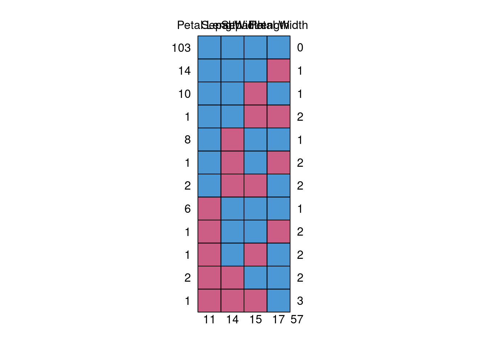
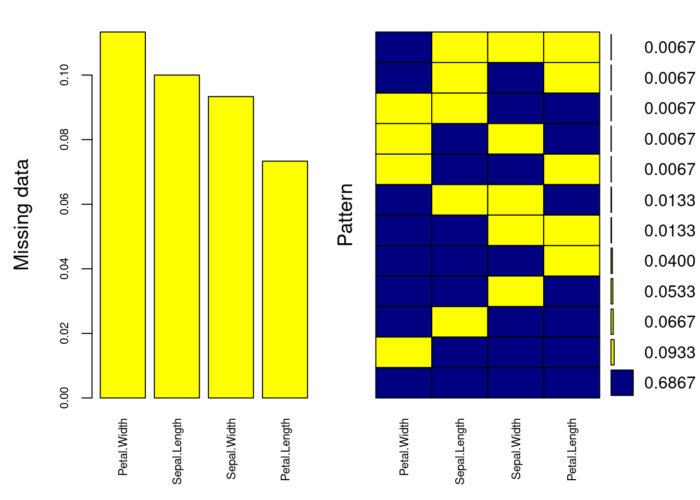

4 数据整理和清理
从各种不同来源得到的数据可能存在数据的格式混乱、数据冗余（重复）、含缺失值(missing data)、异常值(outlier)等问题，无法直接用于模型构建，所以建模的第一步就是完成数据清洗和重构。
数据科学家日常的工作大约有80%的时间都用于清洗数据。
4.1 数据的筛选
- 选出符合条件的数据：根据一定的条件筛选出符合条件的数据子集；
# download data from http://data.un.org/Data.aspx?q=GDP&d=SNAAMA&f=grID%3a101%3bcurrID%3aNCU%3bpcFlag%3a0
library(tidyverse)## ── Attaching packages ─────────────────────────────────────── tidyverse 1.3.1 ──## ✓ ggplot2 3.3.5 ✓ purrr 0.3.4
## ✓ tibble 3.1.6 ✓ dplyr 1.0.8
## ✓ tidyr 1.2.0 ✓ stringr 1.4.0
## ✓ readr 2.1.2 ✓ forcats 0.5.1## ── Conflicts ────────────────────────────────────────── tidyverse_conflicts() ──
## x dplyr::filter() masks stats::filter()
## x dplyr::lag() masks stats::lag()## Country.or.Area Year
## 1 Afghanistan 2020
## 2 Afghanistan 2020
## 3 Afghanistan 2020
## 4 Afghanistan 2020
## 5 Afghanistan 2020
## 6 Afghanistan 2020
## Item
## 1 Final consumption expenditure
## 2 Household consumption expenditure (including Non-profit institutions serving households)
## 3 General government final consumption expenditure
## 4 Gross capital formation
## 5 Gross fixed capital formation (including Acquisitions less disposals of valuables)
## 6 Exports of goods and services
## Value
## 1 1.628089e+12
## 2 1.354293e+12
## 3 2.737961e+11
## 4 1.816860e+11
## 5 1.816860e+11
## 6 2.043364e+11
names(gdp1)## [1] "Country.or.Area" "Year" "Item" "Value"
#levels(as.factor(gdp1[,3]))=paste0("V",1:9)
tb <- as.tibble(gdp1)## Warning: `as.tibble()` was deprecated in tibble 2.0.0.
## Please use `as_tibble()` instead.
## The signature and semantics have changed, see `?as_tibble`.
## This warning is displayed once every 8 hours.
## Call `lifecycle::last_lifecycle_warnings()` to see where this warning was generated.
head(tb)## # A tibble: 6 × 4
## Country.or.Area Year Item Value
## <chr> <int> <chr> <dbl>
## 1 Afghanistan 2020 Final consumption expenditure 1.63e12
## 2 Afghanistan 2020 Household consumption expenditure (including No… 1.35e12
## 3 Afghanistan 2020 General government final consumption expenditure 2.74e11
## 4 Afghanistan 2020 Gross capital formation 1.82e11
## 5 Afghanistan 2020 Gross fixed capital formation (including Acquis… 1.82e11
## 6 Afghanistan 2020 Exports of goods and services 2.04e11
names(tb)## [1] "Country.or.Area" "Year" "Item" "Value"
# filter year 2016 data
tb2016 <- tb[tb$Year==2016,-2]%>%spread(key="Item",value="Value")
head(tb2016,3)## # A tibble: 3 × 10
## Country.or.Area `Changes in inventories` `Exports of goods …` `Final consump…`
## <chr> <dbl> <dbl> <dbl>
## 1 Afghanistan NA 203769211430 1.26e12
## 2 Albania 12602872911 426693482069 1.36e12
## 3 Algeria 1349202900000 3655739600000 1.11e13
## # … with 6 more variables:
## # `General government final consumption expenditure` <dbl>,
## # `Gross capital formation` <dbl>, `Gross Domestic Product (GDP)` <dbl>,
## # `Gross fixed capital formation (including Acquisitions less disposals of valuables)` <dbl>,
## # `Household consumption expenditure (including Non-profit institutions serving households)` <dbl>,
## # `Imports of goods and services` <dbl>## # A tibble: 6 × 10
## Country.or.Area V1 V2 V3 V4 V5 V6 V7
## <chr> <dbl> <dbl> <dbl> <dbl> <dbl> <dbl> <dbl>
## 1 Afghanistan NA 2.04e11 1.26e12 2.81e11 1.54e11 1.22e12 1.54e11
## 2 Albania 12602872911 4.27e11 1.36e12 1.66e11 3.71e11 1.47e12 3.59e11
## 3 Algeria 1349202900000 3.66e12 1.11e13 3.66e12 8.89e12 1.75e13 7.54e12
## 4 Andorra 20754648 8.87e 8 2.02e 9 4.99e 8 4.91e 8 2.62e 9 4.70e 8
## 5 Angola 165743151505 4.65e12 1.16e13 2.30e12 4.50e12 1.65e13 4.34e12
## 6 Anguilla NA 5.62e 8 8.62e 8 1.41e 8 1.80e 8 8.61e 8 1.80e 8
## # … with 2 more variables: V8 <dbl>, V9 <dbl>
ggplot(tb2016,aes(x=V4,y=V5))+
geom_point()+
geom_smooth()## `geom_smooth()` using method = 'loess' and formula 'y ~ x'## Warning: Removed 1 rows containing non-finite values (stat_smooth).## Warning: Removed 1 rows containing missing values (geom_point).
4.2 数据合并
- 把多个数据合并在一起；
## [[1]]
## Country.or.Area Year.s. Value Value.Footnotes
## 1 Afghanistan 2012 -2.4 NA
## 2 Albania 2012 -0.3 NA
## 3 Algeria 2012 -1.9 NA
## 4 Andorra 2012 0.0 NA
## 5 Angola 2012 -3.1 NA
## 6 Antigua and Barbuda 2012 -1.1 NA
## 7 Argentina 2012 -0.9 NA
## 8 Armenia 2012 -0.2 NA
## 9 Australia 2012 -1.3 NA
## 10 Austria 2012 -0.4 NA
## 11 Azerbaijan 2012 -1.2 NA
## 12 Bahamas 2012 -1.6 NA
## 13 Bahrain 2012 -1.9 NA
## 14 Bangladesh 2012 -1.3 NA
## 15 Barbados 2012 -0.4 NA
## 16 Belarus 2012 0.5 NA
## 17 Belgium 2012 -0.5 NA
## 18 Belize 2012 -2.5 NA
## 19 Benin 2012 -2.7 NA
## 20 Bhutan 2012 -1.8 NA
## 21 Bolivia (Plurinational State of) 2012 -1.7 NA
## 22 Bosnia and Herzegovina 2012 0.1 NA
## 23 Botswana 2012 -0.9 NA
## 24 Brazil 2012 -1.0 NA
## 25 Brunei Darussalam 2012 -1.2 NA
## 26 Bulgaria 2012 0.8 NA
## 27 Burkina Faso 2012 -2.9 NA
## 28 Burundi 2012 -3.2 NA
## 29 Cabo Verde 2012 -0.6 NA
## 30 Cambodia 2012 -1.8 NA
## 31 Cameroon 2012 -2.5 NA
## 32 Canada 2012 -1.0 NA
## 33 Central African Republic 2012 -2.0 NA
## 34 Chad 2012 -3.0 NA
## 35 Chile 2012 -0.9 NA
## 36 China 2012 -0.7 NA
## 37 Colombia 2012 -1.3 NA
## 38 Comoros 2012 -2.5 NA
## 39 Congo 2012 -2.6 NA
## 40 Cook Islands 2012 -4.9 NA
## 41 Costa Rica 2012 -1.4 NA
## 42 Côte d’Ivoire 2012 -2.3 NA
## 43 Croatia 2012 0.4 NA
## 44 Cuba 2012 0.0 NA
## 45 Cyprus 2012 -1.1 NA
## 46 Czech Republic 2012 -0.5 NA
## 47 Democratic People's Republic of Korea 2012 -0.5 NA
## 48 Democratic Republic of the Congo 2012 -2.7 NA
## 49 Denmark 2012 -0.4 NA
## 50 Djibouti 2012 -1.5 NA
## 51 Dominica 2012 -1.4 NA
## 52 Dominican Republic 2012 -1.3 NA
## 53 Ecuador 2012 -1.6 NA
## 54 Egypt 2012 -1.7 NA
## 55 El Salvador 2012 -0.7 NA
## 56 Equatorial Guinea 2012 -2.8 NA
## 57 Eritrea 2012 -3.3 NA
## 58 Estonia 2012 0.2 NA
## 59 Ethiopia 2012 -2.6 NA
## 60 Fiji 2012 -0.8 NA
## 61 Finland 2012 -0.4 NA
## 62 France 2012 -0.6 NA
## 63 Gabon 2012 -2.4 NA
## 64 Gambia 2012 -3.2 NA
## 65 Georgia 2012 0.4 NA
## 66 Germany 2012 0.1 NA
## 67 Ghana 2012 -2.2 NA
## 68 Greece 2012 -0.1 NA
## 69 Grenada 2012 0.0 NA
## 70 Guatemala 2012 -2.5 NA
## 71 Guinea 2012 -2.6 NA
## 72 Guinea-Bissau 2012 -2.4 NA
## 73 Guyana 2012 -0.5 NA
## 74 Haiti 2012 -1.4 NA
## 75 Honduras 2012 -2.0 NA
## 76 Hungary 2012 0.2 NA
## 77 Iceland 2012 -1.2 NA
## 78 India 2012 -1.6 NA
## 79 Indonesia 2012 -1.2 NA
## 80 Iran (Islamic Republic of) 2012 -1.3 NA
## 81 Iraq 2012 -2.9 NA
## 82 Ireland 2012 -1.2 NA
## 83 Israel 2012 -1.3 NA
## 84 Italy 2012 -0.3 NA
## 85 Jamaica 2012 -0.5 NA
## 86 Japan 2012 0.0 NA
## 87 Jordan 2012 -4.0 NA
## 88 Kazakhstan 2012 -1.1 NA
## 89 Kenya 2012 -2.7 NA
## 90 Kiribati 2012 -2.0 NA
## 91 Kuwait 2012 -3.9 NA
## 92 Kyrgyzstan 2012 -1.3 NA
## 93 Lao People's Democratic Republic 2012 -1.9 NA
## 94 Latvia 2012 0.6 NA
## 95 Lebanon 2012 -3.7 NA
## 96 Lesotho 2012 -1.1 NA
## 97 Liberia 2012 -2.7 NA
## 98 Libya 2012 -0.8 NA
## 99 Lithuania 2012 0.5 NA
## 100 Luxembourg 2012 -1.5 NA
## 101 Madagascar 2012 -2.8 NA
## 102 Malawi 2012 -2.9 NA
## 103 Malaysia 2012 -1.7 NA
## 104 Maldives 2012 -1.8 NA
## 105 Mali 2012 -3.0 NA
## 106 Malta 2012 -0.5 NA
## 107 Marshall Islands 2012 -1.9 NA
## 108 Mauritania 2012 -2.5 NA
## 109 Mauritius 2012 -0.4 NA
## 110 Mexico 2012 -1.7 NA
## 111 Micronesia (Federated States of) 2012 0.0 NA
## 112 Monaco 2012 -2.7 NA
## 113 Mongolia 2012 -1.5 NA
## 114 Montenegro 2012 0.0 NA
## 115 Morocco 2012 -1.4 NA
## 116 Mozambique 2012 -2.5 NA
## 117 Myanmar 2012 -0.8 NA
## 118 Namibia 2012 -1.8 NA
## 119 Nauru 2012 0.0 NA
## 120 Nepal 2012 -1.2 NA
## 121 Netherlands 2012 -0.3 NA
## 122 New Zealand 2012 -1.0 NA
## 123 Nicaragua 2012 -1.5 NA
## 124 Niger 2012 -3.8 NA
## 125 Nigeria 2012 -3.0 NA
## 126 Niue 2012 0.0 NA
## 127 Norway 2012 -1.0 NA
## 128 Oman 2012 -9.1 NA
## 129 Pakistan 2012 -1.7 NA
## 130 Palau 2012 0.0 NA
## 131 Panama 2012 -1.6 NA
## 132 Papua New Guinea 2012 -2.2 NA
## 133 Paraguay 2012 -1.7 NA
## 134 Peru 2012 -1.3 NA
## 135 Philippines 2012 -1.7 NA
## 136 Poland 2012 0.0 NA
## 137 Portugal 2012 -0.1 NA
## 138 Qatar 2012 -7.1 NA
## 139 Republic of Korea 2012 -0.6 NA
## 140 Republic of Moldova 2012 0.8 NA
## 141 Romania 2012 0.2 NA
## 142 Russian Federation 2012 0.0 NA
## 143 Rwanda 2012 -2.8 NA
## 144 Saint Kitts and Nevis 2012 -1.9 NA
## 145 Saint Lucia 2012 -1.1 NA
## 146 Saint Vincent and the Grenadines 2012 0.0 NA
## 147 Samoa 2012 -1.1 NA
## 148 San Marino 2012 0.0 NA
## 149 Sao Tome and Principe 2012 -2.7 NA
## 150 Saudi Arabia 2012 -1.9 NA
## 151 Senegal 2012 -2.9 NA
## 152 Serbia 2012 0.5 NA
## 153 Seychelles 2012 0.0 NA
## 154 Sierra Leone 2012 -1.9 NA
## 155 Singapore 2012 -2.1 NA
## 156 Slovakia 2012 -0.1 NA
## 157 Slovenia 2012 -0.3 NA
## 158 Solomon Islands 2012 -2.2 NA
## 159 Somalia 2012 -2.9 NA
## 160 South Africa 2012 -0.8 NA
## 161 South Sudan 2012 -4.3 NA
## 162 Spain 2012 -0.5 NA
## 163 Sri Lanka 2012 -0.8 NA
## 164 Sudan 2012 -2.1 NA
## 165 Suriname 2012 -0.9 NA
## 166 Swaziland 2012 -1.6 NA
## 167 Sweden 2012 -0.7 NA
## 168 Switzerland 2012 -1.0 NA
## 169 Syrian Arab Republic 2012 -0.4 NA
## 170 Tajikistan 2012 -2.5 NA
## 171 Thailand 2012 -0.3 NA
## 172 The former Yugoslav Republic of Macedonia 2012 -0.1 NA
## 173 Timor-Leste 2012 -1.6 NA
## 174 Togo 2012 -2.6 NA
## 175 Tonga 2012 0.0 NA
## 176 Trinidad and Tobago 2012 -0.3 NA
## 177 Tunisia 2012 -1.1 NA
## 178 Turkey 2012 -1.3 NA
## 179 Turkmenistan 2012 -1.3 NA
## 180 Tuvalu 2012 0.0 NA
## 181 Uganda 2012 -3.4 NA
## 182 Ukraine 2012 0.6 NA
## 183 United Arab Emirates 2012 -3.1 NA
## 184 United Kingdom 2012 -0.6 NA
## 185 United Republic of Tanzania 2012 -3.0 NA
## 186 United States of America 2012 -0.9 NA
## 187 Uruguay 2012 -0.4 NA
## 188 Uzbekistan 2012 -1.4 NA
## 189 Vanuatu 2012 -2.0 NA
## 190 Venezuela (Bolivarian Republic of) 2012 -1.5 NA
## 191 Viet Nam 2012 -1.0 NA
## 192 Yemen 2012 -2.3 NA
## 193 Zambia 2012 -3.2 NA
## 194 Zimbabwe 2012 -2.7 NA
##
## [[2]]
## Country.or.Area Year.s. Value Value.Footnotes
## 1 Afghanistan 2012 60 NA
## 2 Afghanistan 2011 54 NA
## 3 Afghanistan 2010 41 NA
## 4 Albania 2012 111 NA
## 5 Albania 2011 96 NA
## 6 Albania 2010 142 NA
## 7 Algeria 2012 98 NA
## 8 Algeria 2011 99 NA
## 9 Algeria 2010 92 NA
## 10 Andorra 2012 81 NA
## 11 Andorra 2011 75 NA
## 12 Andorra 2010 77 NA
## 13 Angola 2012 47 NA
## 14 Angola 2011 48 NA
## 15 Angola 2010 47 NA
## 16 Antigua and Barbuda 2012 143 NA
## 17 Antigua and Barbuda 2011 196 NA
## 18 Antigua and Barbuda 2010 189 NA
## 19 Argentina 2012 152 NA
## 20 Argentina 2011 135 NA
## 21 Argentina 2010 142 NA
## 22 Armenia 2012 112 NA
## 23 Armenia 2011 104 NA
## 24 Armenia 2010 125 NA
## 25 Australia 2012 106 NA
## 26 Australia 2011 108 NA
## 27 Australia 2010 101 NA
## 28 Austria 2012 161 NA
## 29 Austria 2011 155 NA
## 30 Austria 2010 146 NA
## 31 Azerbaijan 2012 109 NA
## 32 Azerbaijan 2011 109 NA
## 33 Azerbaijan 2010 99 NA
## 34 Bahamas 2012 81 NA
## 35 Bahamas 2011 86 NA
## 36 Bahamas 2010 125 NA
## 37 Bahrain 2012 161 NA
## 38 Bahrain 2011 128 NA
## 39 Bahrain 2010 124 NA
## 40 Bangladesh 2012 63 NA
## 41 Bangladesh 2011 56 NA
## 42 Bangladesh 2010 46 NA
## 43 Barbados 2012 123 NA
## 44 Barbados 2011 127 NA
## 45 Barbados 2010 128 NA
## 46 Belarus 2012 114 NA
## 47 Belarus 2011 112 NA
## 48 Belarus 2010 108 NA
## 49 Belgium 2012 111 NA
## 50 Belgium 2011 117 NA
## 51 Belgium 2010 113 NA
## 52 Belize 2012 53 NA
## 53 Belize 2011 70 NA
## 54 Belize 2010 62 NA
## 55 Benin 2012 84 NA
## 56 Benin 2011 85 NA
## 57 Benin 2010 80 NA
## 58 Bhutan 2012 76 NA
## 59 Bhutan 2011 66 NA
## 60 Bhutan 2010 54 NA
## 61 Bolivia (Plurinational State of) 2012 90 NA
## 62 Bolivia (Plurinational State of) 2011 83 NA
## 63 Bolivia (Plurinational State of) 2010 72 NA
## 64 Bosnia and Herzegovina 2012 88 NA
## 65 Bosnia and Herzegovina 2011 85 NA
## 66 Bosnia and Herzegovina 2010 83 NA
## 67 Botswana 2012 154 NA
## 68 Botswana 2011 143 NA
## 69 Botswana 2010 118 NA
## 70 Brazil 2012 125 NA
## 71 Brazil 2011 124 NA
## 72 Brazil 2010 104 NA
## 73 Brunei Darussalam 2012 114 NA
## 74 Brunei Darussalam 2011 109 NA
## 75 Brunei Darussalam 2010 109 NA
## 76 Bulgaria 2012 148 NA
## 77 Bulgaria 2011 141 NA
## 78 Bulgaria 2010 136 NA
## 79 Burkina Faso 2012 61 NA
## 80 Burkina Faso 2011 45 NA
## 81 Burkina Faso 2010 35 NA
## 82 Burundi 2012 23 NA
## 83 Burundi 2011 22 NA
## 84 Burundi 2010 14 NA
## 85 Cabo Verde 2012 86 NA
## 86 Cabo Verde 2011 79 NA
## 87 Cabo Verde 2010 75 NA
## 88 Cambodia 2012 129 NA
## 89 Cambodia 2011 96 NA
## 90 Cambodia 2010 58 NA
## 91 Cameroon 2012 60 NA
## 92 Cameroon 2011 52 NA
## 93 Cameroon 2010 44 NA
## 94 Canada 2012 80 NA
## 95 Canada 2011 80 NA
## 96 Canada 2010 71 NA
## 97 Central African Republic 2012 25 NA
## 98 Central African Republic 2011 41 NA
## 99 Central African Republic 2010 22 NA
## 100 Chad 2012 35 NA
## 101 Chad 2011 32 NA
## 102 Chad 2010 24 NA
## 103 Chile 2012 138 NA
## 104 Chile 2011 130 NA
## 105 Chile 2010 116 NA
## 106 China 2012 80 NA
## 107 China 2011 73 NA
## 108 China 2010 64 NA
## 109 Colombia 2012 103 NA
## 110 Colombia 2011 98 NA
## 111 Colombia 2010 96 NA
## 112 Comoros 2012 40 NA
## 113 Comoros 2011 29 NA
## 114 Comoros 2010 22 NA
## 115 Congo 2012 99 NA
## 116 Congo 2011 94 NA
## 117 Congo 2010 94 NA
## 118 Cook Islands 2010 38 NA
## 119 Costa Rica 2012 112 NA
## 120 Costa Rica 2011 92 NA
## 121 Costa Rica 2010 65 NA
## 122 Côte d’Ivoire 2012 91 NA
## 123 Côte d’Ivoire 2011 86 NA
## 124 Côte d’Ivoire 2010 76 NA
## 125 Croatia 2012 115 NA
## 126 Croatia 2011 116 NA
## 127 Croatia 2010 144 NA
## 128 Cuba 2012 15 NA
## 129 Cuba 2011 12 NA
## 130 Cuba 2010 9 NA
## 131 Cyprus 2012 98 NA
## 132 Cyprus 2011 98 NA
## 133 Cyprus 2010 94 NA
## 134 Czech Republic 2012 127 NA
## 135 Czech Republic 2011 123 NA
## 136 Czech Republic 2010 137 NA
## 137 Democratic People's Republic of Korea 2012 7 NA
## 138 Democratic People's Republic of Korea 2011 4 NA
## 139 Democratic People's Republic of Korea 2010 2 NA
## 140 Democratic Republic of the Congo 2012 31 NA
## 141 Democratic Republic of the Congo 2011 23 NA
## 142 Democratic Republic of the Congo 2010 18 NA
## 143 Denmark 2012 118 NA
## 144 Denmark 2011 128 NA
## 145 Denmark 2010 125 NA
## 146 Djibouti 2012 25 NA
## 147 Djibouti 2011 21 NA
## 148 Djibouti 2010 19 NA
## 149 Dominica 2012 152 NA
## 150 Dominica 2011 164 NA
## 151 Dominica 2010 156 NA
## 152 Dominican Republic 2012 87 NA
## 153 Dominican Republic 2011 87 NA
## 154 Dominican Republic 2010 90 NA
## 155 Ecuador 2012 106 NA
## 156 Ecuador 2011 105 NA
## 157 Ecuador 2010 102 NA
## 158 Egypt 2012 120 NA
## 159 Egypt 2011 101 NA
## 160 Egypt 2010 87 NA
## 161 El Salvador 2012 137 NA
## 162 El Salvador 2011 134 NA
## 163 El Salvador 2010 124 NA
## 164 Equatorial Guinea 2012 68 NA
## 165 Equatorial Guinea 2011 59 NA
## 166 Equatorial Guinea 2010 57 NA
## 167 Eritrea 2012 5 NA
## 168 Eritrea 2011 4 NA
## 169 Eritrea 2010 4 NA
## 170 Estonia 2012 160 NA
## 171 Estonia 2011 139 NA
## 172 Estonia 2010 123 NA
## 173 Ethiopia 2012 22 NA
## 174 Ethiopia 2011 17 NA
## 175 Ethiopia 2010 8 NA
## 176 Fiji 2012 98 NA
## 177 Fiji 2011 84 NA
## 178 Fiji 2010 81 NA
## 179 Finland 2012 172 NA
## 180 Finland 2011 166 NA
## 181 Finland 2010 156 NA
## 182 France 2012 97 NA
## 183 France 2011 95 NA
## 184 France 2010 101 NA
## 185 Gabon 2012 179 NA
## 186 Gabon 2011 117 NA
## 187 Gabon 2010 107 NA
## 188 Gambia 2012 85 NA
## 189 Gambia 2011 79 NA
## 190 Gambia 2010 86 NA
## 191 Georgia 2012 108 NA
## 192 Georgia 2011 102 NA
## 193 Georgia 2010 91 NA
## 194 Germany 2012 112 NA
## 195 Germany 2011 132 NA
## 196 Germany 2010 127 NA
## 197 Ghana 2012 101 NA
## 198 Ghana 2011 85 NA
## 199 Ghana 2010 71 NA
## 200 Greece 2012 120 NA
## 201 Greece 2011 106 NA
## 202 Greece 2010 108 NA
## 203 Grenada 2012 121 NA
## 204 Grenada 2010 117 NA
## 205 Guatemala 2012 138 NA
## 206 Guatemala 2011 140 NA
## 207 Guatemala 2010 126 NA
## 208 Guinea 2012 42 NA
## 209 Guinea 2011 44 NA
## 210 Guinea 2010 40 NA
## 211 Guinea-Bissau 2012 63 NA
## 212 Guinea-Bissau 2011 56 NA
## 213 Guinea-Bissau 2010 39 NA
## 214 Guyana 2012 69 NA
## 215 Guyana 2011 70 NA
## 216 Guyana 2010 74 NA
## 217 Haiti 2012 60 NA
## 218 Haiti 2011 41 NA
## 219 Haiti 2010 40 NA
## 220 Honduras 2012 93 NA
## 221 Honduras 2011 104 NA
## 222 Honduras 2010 125 NA
## 223 Hungary 2012 116 NA
## 224 Hungary 2011 117 NA
## 225 Hungary 2010 120 NA
## 226 Iceland 2012 108 NA
## 227 Iceland 2011 106 NA
## 228 Iceland 2010 107 NA
## 229 India 2012 70 NA
## 230 India 2011 72 NA
## 231 India 2010 61 NA
## 232 Indonesia 2012 114 NA
## 233 Indonesia 2011 103 NA
## 234 Indonesia 2010 92 NA
## 235 Iran (Islamic Republic of) 2012 76 NA
## 236 Iran (Islamic Republic of) 2011 75 NA
## 237 Iran (Islamic Republic of) 2010 91 NA
## 238 Iraq 2012 82 NA
## 239 Iraq 2011 78 NA
## 240 Iraq 2010 76 NA
## 241 Ireland 2012 107 NA
## 242 Ireland 2011 108 NA
## 243 Ireland 2010 105 NA
## 244 Israel 2012 121 NA
## 245 Israel 2011 122 NA
## 246 Israel 2010 133 NA
## 247 Italy 2012 160 NA
## 248 Italy 2011 158 NA
## 249 Italy 2010 150 NA
## 250 Jamaica 2012 96 NA
## 251 Jamaica 2011 108 NA
## 252 Jamaica 2010 116 NA
## 253 Japan 2012 111 NA
## 254 Japan 2011 105 NA
## 255 Japan 2010 95 NA
## 256 Jordan 2012 128 NA
## 257 Jordan 2011 118 NA
## 258 Jordan 2010 107 NA
## 259 Kazakhstan 2012 186 NA
## 260 Kazakhstan 2011 156 NA
## 261 Kazakhstan 2010 121 NA
## 262 Kenya 2012 71 NA
## 263 Kenya 2011 67 NA
## 264 Kenya 2010 62 NA
## 265 Kiribati 2012 16 NA
## 266 Kiribati 2011 14 NA
## 267 Kiribati 2010 10 NA
## 268 Kuwait 2012 157 NA
## 269 Kuwait 2011 175 NA
## 270 Kuwait 2010 161 NA
## 271 Kyrgyzstan 2012 124 NA
## 272 Kyrgyzstan 2011 116 NA
## 273 Kyrgyzstan 2010 99 NA
## 274 Lao People's Democratic Republic 2012 65 NA
## 275 Lao People's Democratic Republic 2011 87 NA
## 276 Lao People's Democratic Republic 2010 65 NA
## 277 Latvia 2012 112 NA
## 278 Latvia 2011 103 NA
## 279 Latvia 2010 102 NA
## 280 Lebanon 2012 81 NA
## 281 Lebanon 2011 79 NA
## 282 Lebanon 2010 68 NA
## 283 Lesotho 2012 75 NA
## 284 Lesotho 2011 56 NA
## 285 Lesotho 2010 45 NA
## 286 Liberia 2012 57 NA
## 287 Liberia 2011 49 NA
## 288 Liberia 2010 39 NA
## 289 Libya 2012 156 NA
## 290 Libya 2011 156 NA
## 291 Libya 2010 172 NA
## 292 Lithuania 2012 165 NA
## 293 Lithuania 2011 151 NA
## 294 Lithuania 2010 147 NA
## 295 Luxembourg 2012 145 NA
## 296 Luxembourg 2011 148 NA
## 297 Luxembourg 2010 143 NA
## 298 Madagascar 2012 39 NA
## 299 Madagascar 2011 41 NA
## 300 Madagascar 2010 37 NA
## 301 Malawi 2012 29 NA
## 302 Malawi 2011 26 NA
## 303 Malawi 2010 20 NA
## 304 Malaysia 2012 141 NA
## 305 Malaysia 2011 127 NA
## 306 Malaysia 2010 119 NA
## 307 Maldives 2012 166 NA
## 308 Maldives 2011 166 NA
## 309 Maldives 2010 157 NA
## 310 Mali 2012 98 NA
## 311 Mali 2011 68 NA
## 312 Mali 2010 48 NA
## 313 Malta 2012 127 NA
## 314 Malta 2011 125 NA
## 315 Malta 2010 109 NA
## 316 Marshall Islands 2010 7 NA
## 317 Mauritania 2012 106 NA
## 318 Mauritania 2011 94 NA
## 319 Mauritania 2010 79 NA
## 320 Mauritius 2012 120 NA
## 321 Mauritius 2011 99 NA
## 322 Mauritius 2010 92 NA
## 323 Mexico 2012 83 NA
## 324 Mexico 2011 82 NA
## 325 Mexico 2010 81 NA
## 326 Micronesia (Federated States of) 2012 30 NA
## 327 Micronesia (Federated States of) 2010 25 NA
## 328 Monaco 2012 88 NA
## 329 Monaco 2011 90 NA
## 330 Monaco 2010 74 NA
## 331 Mongolia 2012 121 NA
## 332 Mongolia 2011 105 NA
## 333 Mongolia 2010 91 NA
## 334 Montenegro 2012 181 NA
## 335 Montenegro 2010 185 NA
## 336 Morocco 2012 120 NA
## 337 Morocco 2011 113 NA
## 338 Morocco 2010 100 NA
## 339 Mozambique 2012 36 NA
## 340 Mozambique 2011 33 NA
## 341 Mozambique 2010 31 NA
## 342 Myanmar 2012 10 NA
## 343 Myanmar 2011 3 NA
## 344 Myanmar 2010 1 NA
## 345 Namibia 2012 95 NA
## 346 Namibia 2011 96 NA
## 347 Namibia 2010 67 NA
## 348 Nauru 2012 68 NA
## 349 Nauru 2011 65 NA
## 350 Nauru 2010 60 NA
## 351 Nepal 2012 60 NA
## 352 Nepal 2011 44 NA
## 353 Nepal 2010 31 NA
## 354 Netherlands 2012 118 NA
## 355 Netherlands 2010 115 NA
## 356 New Zealand 2012 110 NA
## 357 New Zealand 2011 109 NA
## 358 New Zealand 2010 115 NA
## 359 Nicaragua 2012 86 NA
## 360 Nicaragua 2011 82 NA
## 361 Nicaragua 2010 65 NA
## 362 Niger 2012 31 NA
## 363 Niger 2011 30 NA
## 364 Niger 2010 25 NA
## 365 Nigeria 2012 67 NA
## 366 Nigeria 2011 59 NA
## 367 Nigeria 2010 55 NA
## 368 Niue 2010 0 NA
## 369 Norway 2012 117 NA
## 370 Norway 2011 116 NA
## 371 Norway 2010 116 NA
## 372 Oman 2012 159 NA
## 373 Oman 2011 169 NA
## 374 Oman 2010 166 NA
## 375 Pakistan 2012 67 NA
## 376 Pakistan 2011 62 NA
## 377 Pakistan 2010 57 NA
## 378 Palau 2012 83 NA
## 379 Palau 2011 75 NA
## 380 Palau 2010 71 NA
## 381 Panama 2012 178 NA
## 382 Panama 2011 189 NA
## 383 Panama 2010 185 NA
## 384 Papua New Guinea 2012 38 NA
## 385 Papua New Guinea 2011 34 NA
## 386 Papua New Guinea 2010 28 NA
## 387 Paraguay 2012 102 NA
## 388 Paraguay 2011 99 NA
## 389 Paraguay 2010 92 NA
## 390 Peru 2012 98 NA
## 391 Peru 2011 110 NA
## 392 Peru 2010 100 NA
## 393 Philippines 2012 107 NA
## 394 Philippines 2011 99 NA
## 395 Philippines 2010 86 NA
## 396 Poland 2012 140 NA
## 397 Poland 2011 131 NA
## 398 Poland 2010 123 NA
## 399 Portugal 2012 116 NA
## 400 Portugal 2011 115 NA
## 401 Portugal 2010 142 NA
## 402 Qatar 2012 127 NA
## 403 Qatar 2011 123 NA
## 404 Qatar 2010 132 NA
## 405 Republic of Korea 2012 109 NA
## 406 Republic of Korea 2011 109 NA
## 407 Republic of Korea 2010 105 NA
## 408 Republic of Moldova 2012 102 NA
## 409 Republic of Moldova 2011 105 NA
## 410 Republic of Moldova 2010 89 NA
## 411 Romania 2012 105 NA
## 412 Romania 2011 109 NA
## 413 Romania 2010 115 NA
## 414 Russian Federation 2012 183 NA
## 415 Russian Federation 2011 179 NA
## 416 Russian Federation 2010 166 NA
## 417 Rwanda 2012 50 NA
## 418 Rwanda 2011 41 NA
## 419 Rwanda 2010 33 NA
## 420 Saint Kitts and Nevis 2012 157 NA
## 421 Saint Kitts and Nevis 2010 153 NA
## 422 Saint Lucia 2012 126 NA
## 423 Saint Lucia 2011 123 NA
## 424 Saint Lucia 2010 114 NA
## 425 Saint Vincent and the Grenadines 2012 124 NA
## 426 Saint Vincent and the Grenadines 2011 121 NA
## 427 Saint Vincent and the Grenadines 2010 121 NA
## 428 Samoa 2010 91 NA
## 429 San Marino 2012 115 NA
## 430 San Marino 2011 112 NA
## 431 San Marino 2010 76 NA
## 432 Sao Tome and Principe 2012 65 NA
## 433 Sao Tome and Principe 2011 68 NA
## 434 Sao Tome and Principe 2010 62 NA
## 435 Saudi Arabia 2012 187 NA
## 436 Saudi Arabia 2011 191 NA
## 437 Saudi Arabia 2010 188 NA
## 438 Senegal 2012 84 NA
## 439 Senegal 2011 73 NA
## 440 Senegal 2010 67 NA
## 441 Serbia 2012 96 NA
## 442 Serbia 2011 125 NA
## 443 Serbia 2010 129 NA
## 444 Seychelles 2012 148 NA
## 445 Seychelles 2011 146 NA
## 446 Seychelles 2010 136 NA
## 447 Sierra Leone 2012 37 NA
## 448 Sierra Leone 2011 36 NA
## 449 Sierra Leone 2010 34 NA
## 450 Singapore 2012 152 NA
## 451 Singapore 2011 150 NA
## 452 Singapore 2010 145 NA
## 453 Slovakia 2012 112 NA
## 454 Slovakia 2011 109 NA
## 455 Slovakia 2010 108 NA
## 456 Slovenia 2012 109 NA
## 457 Slovenia 2011 107 NA
## 458 Slovenia 2010 105 NA
## 459 Solomon Islands 2012 55 NA
## 460 Solomon Islands 2011 50 NA
## 461 Solomon Islands 2010 6 NA
## 462 Somalia 2012 23 NA
## 463 Somalia 2011 7 NA
## 464 Somalia 2010 7 NA
## 465 South Africa 2012 131 NA
## 466 South Africa 2011 127 NA
## 467 South Africa 2010 100 NA
## 468 South Sudan 2012 21 NA
## 469 Spain 2012 108 NA
## 470 Spain 2011 113 NA
## 471 Spain 2010 112 NA
## 472 Sri Lanka 2012 92 NA
## 473 Sri Lanka 2011 87 NA
## 474 Sri Lanka 2010 83 NA
## 475 Sudan 2012 74 NA
## 476 Sudan 2011 56 NA
## 477 Sudan 2010 41 NA
## 478 Suriname 2012 106 NA
## 479 Suriname 2011 179 NA
## 480 Suriname 2010 170 NA
## 481 Swaziland 2012 65 NA
## 482 Swaziland 2011 64 NA
## 483 Swaziland 2010 62 NA
## 484 Sweden 2012 125 NA
## 485 Sweden 2011 119 NA
## 486 Sweden 2010 116 NA
## 487 Switzerland 2012 130 NA
## 488 Switzerland 2011 131 NA
## 489 Switzerland 2010 124 NA
## 490 Syrian Arab Republic 2012 59 NA
## 491 Syrian Arab Republic 2011 63 NA
## 492 Syrian Arab Republic 2010 58 NA
## 493 Tajikistan 2012 82 NA
## 494 Tajikistan 2011 91 NA
## 495 Tajikistan 2010 86 NA
## 496 Thailand 2012 127 NA
## 497 Thailand 2011 112 NA
## 498 Thailand 2010 104 NA
## 499 The former Yugoslav Republic of Macedonia 2012 106 NA
## 500 The former Yugoslav Republic of Macedonia 2011 107 NA
## 501 The former Yugoslav Republic of Macedonia 2010 105 NA
## 502 Timor-Leste 2012 56 NA
## 503 Timor-Leste 2011 53 NA
## 504 Timor-Leste 2010 53 NA
## 505 Togo 2012 50 NA
## 506 Togo 2011 50 NA
## 507 Togo 2010 41 NA
## 508 Tonga 2012 53 NA
## 509 Tonga 2011 53 NA
## 510 Tonga 2010 52 NA
## 511 Trinidad and Tobago 2012 141 NA
## 512 Trinidad and Tobago 2011 136 NA
## 513 Trinidad and Tobago 2010 141 NA
## 514 Tunisia 2012 118 NA
## 515 Tunisia 2011 117 NA
## 516 Tunisia 2010 106 NA
## 517 Turkey 2012 91 NA
## 518 Turkey 2011 89 NA
## 519 Turkey 2010 85 NA
## 520 Turkmenistan 2012 76 NA
## 521 Turkmenistan 2011 69 NA
## 522 Turkmenistan 2010 63 NA
## 523 Tuvalu 2012 28 NA
## 524 Tuvalu 2011 22 NA
## 525 Tuvalu 2010 25 NA
## 526 Uganda 2012 45 NA
## 527 Uganda 2011 48 NA
## 528 Uganda 2010 38 NA
## 529 Ukraine 2012 130 NA
## 530 Ukraine 2011 123 NA
## 531 Ukraine 2010 119 NA
## 532 United Arab Emirates 2012 150 NA
## 533 United Arab Emirates 2011 149 NA
## 534 United Arab Emirates 2010 145 NA
## 535 United Kingdom 2012 135 NA
## 536 United Kingdom 2011 131 NA
## 537 United Kingdom 2010 131 NA
## 538 United Republic of Tanzania 2012 57 NA
## 539 United Republic of Tanzania 2011 56 NA
## 540 United Republic of Tanzania 2010 47 NA
## 541 United States of America 2012 95 NA
## 542 United States of America 2011 93 NA
## 543 United States of America 2010 90 NA
## 544 Uruguay 2012 147 NA
## 545 Uruguay 2011 141 NA
## 546 Uruguay 2010 132 NA
## 547 Uzbekistan 2012 71 NA
## 548 Uzbekistan 2011 92 NA
## 549 Uzbekistan 2010 76 NA
## 550 Vanuatu 2012 59 NA
## 551 Vanuatu 2011 56 NA
## 552 Vanuatu 2010 119 NA
## 553 Venezuela (Bolivarian Republic of) 2012 102 NA
## 554 Venezuela (Bolivarian Republic of) 2011 98 NA
## 555 Venezuela (Bolivarian Republic of) 2010 96 NA
## 556 Viet Nam 2012 148 NA
## 557 Viet Nam 2011 143 NA
## 558 Viet Nam 2010 175 NA
## 559 Yemen 2012 58 NA
## 560 Yemen 2011 47 NA
## 561 Yemen 2010 46 NA
## 562 Zambia 2012 75 NA
## 563 Zambia 2011 61 NA
## 564 Zambia 2010 42 NA
## 565 Zimbabwe 2012 92 NA
## 566 Zimbabwe 2011 72 NA
## 567 Zimbabwe 2010 61 NA
##
## [[3]]
## Country.or.Area Year.s. Value Value.Footnotes
## 1 Afghanistan 2010-2011 37.4 NA
## 2 Albania 2008-2009 98.6 NA
## 3 Algeria 2006 99.3 NA
## 4 Andorra 2010 >90 NA
## 5 Antigua and Barbuda 2010 >90 NA
## 6 Argentina 2010 >90 NA
## 7 Armenia 2010 99.6 NA
## 8 Australia 2010 >90 NA
## 9 Austria 2011 >90 NA
## 10 Azerbaijan 2006 93.6 NA
## 11 Bahrain 2009 >90 NA
## 12 Bangladesh 2006 9.8 NA
## 13 Barbados 2007 >90 NA
## 14 Belarus 2011 >90 NA
## 15 Belgium 2011 >90 NA
## 16 Belize 2011 95.2 NA
## 17 Benin 2006 60.3 NA
## 18 Bhutan 2010 99.9 NA
## 19 Bolivia (Plurinational State of) 2008 75.8 NA
## 20 Bosnia and Herzegovina 2006 99.5 NA
## 21 Botswana 2007-2008 72.2 NA
## 22 Brazil 2010 93.4 NA
## 23 Brunei Darussalam 2008 >90 NA
## 24 Bulgaria 2011 >90 NA
## 25 Burkina Faso 2010 76.9 NA
## 26 Burundi 2010 75.2 NA
## 27 Cabo Verde 2010 91.4 NA
## 28 Cambodia 2010 62.1 NA
## 29 Cameroon 2006 70.1 NA
## 30 Canada 2009 >90 NA
## 31 Central African Republic 2010 61 NA
## 32 Chad 2010 15.7 NA
## 33 Chile 2009 99.5 NA
## 34 Colombia 2010 96.5 NA
## 35 Congo 2005 81.1 NA
## 36 Cook Islands 2010 >90 NA
## 37 Costa Rica 2011 >90 NA
## 38 Côte d’Ivoire 2006 54.9 NA
## 39 Croatia 2011 >90 NA
## 40 Cuba 2011 100 NA
## 41 Cyprus 2011 >90 NA
## 42 Czech Republic 2011 >90 NA
## 43 Democratic People's Republic of Korea 2009 100 NA
## 44 Democratic Republic of the Congo 2010 27.8 NA
## 45 Denmark 2011 >90 NA
## 46 Djibouti 2006 89.2 NA
## 47 Dominica 2010 >90 NA
## 48 Dominican Republic 2009-2010 79.2 NA
## 49 Ecuador 2010 90 NA
## 50 Egypt 2005 99 NA
## 51 El Salvador 2008 98.6 NA
## 52 Estonia 2011 >90 NA
## 53 Ethiopia 2005 6.6 NA
## 54 Fiji 2009 >90 NA
## 55 Finland 2011 >90 NA
## 56 France 2011 >90 NA
## 57 Gambia 2010 52.5 NA
## 58 Georgia 2011 98.5 NA
## 59 Germany 2011 >90 NA
## 60 Ghana 2011 62.5 NA
## 61 Greece 2011 >90 NA
## 62 Guatemala 2008 96.7 NA
## 63 Guinea 2005 43.2 NA
## 64 Guinea-Bissau 2010 24.1 NA
## 65 Guyana 2009 87.9 NA
## 66 Haiti 2005-2006 81.1 NA
## 67 Honduras 2005-2006 93.5 NA
## 68 Hungary 2011 >90 NA
## 69 Iceland 2011 >90 NA
## 70 India 2005-2006 41.1 NA
## 71 Indonesia 2007 53.1 NA
## 72 Iran (Islamic Republic of) 2008 >90 NA
## 73 Iraq 2006 95 NA
## 74 Ireland 2011 >90 NA
## 75 Israel 2011 >90 NA
## 76 Italy 2011 >90 NA
## 77 Jamaica 2008 97.8 NA
## 78 Japan 2010 >90 NA
## 79 Jordan 2010 >90 NA
## 80 Kazakhstan 2010-2011 99.7 NA
## 81 Kenya 2008-2009 60 NA
## 82 Kiribati 2009 93.5 NA
## 83 Kuwait 2010 >90 NA
## 84 Kyrgyzstan 2005-2006 94.2 NA
## 85 Lao People's Democratic Republic 2006 71.5 NA
## 86 Latvia 2011 >90 NA
## 87 Lebanon 2009 99.5 NA
## 88 Lesotho 2009 45.1 NA
## 89 Liberia 2007 3.6 NA
## 90 Lithuania 2011 >90 NA
## 91 Luxembourg 2011 >90 NA
## 92 Madagascar 2008-2009 79.7 NA
## 93 Malaysia 2010 >90 NA
## 94 Maldives 2009 92.5 NA
## 95 Mali 2010 80.8 NA
## 96 Malta 2011 >90 NA
## 97 Marshall Islands 2007 95.9 NA
## 98 Mauritania 2007 55.9 NA
## 99 Mauritius 2011 >90 NA
## 100 Mongolia 2010 99 NA
## 101 Montenegro 2005-2006 97.9 NA
## 102 Mozambique 2008 30.8 NA
## 103 Myanmar 2009-2010 72.4 NA
## 104 Namibia 2006-2007 67.1 NA
## 105 Nauru 2007 82.6 NA
## 106 Nepal 2011 42.3 NA
## 107 Netherlands 2011 >90 NA
## 108 New Zealand 2011 >90 NA
## 109 Nicaragua 2006 81.3 NA
## 110 Niger 2006 31.8 NA
## 111 Nigeria 2008 30 NA
## 112 Niue 2009 >90 NA
## 113 Norway 2011 >90 NA
## 114 Pakistan 2006-2007 26.5 NA
## 115 Panama 2011 >90 NA
## 116 Peru 2007 92.9 NA
## 117 Philippines 2009 >90 NA
## 118 Poland 2011 >90 NA
## 119 Portugal 2011 >90 NA
## 120 Qatar 2011 >90 NA
## 121 Republic of Korea 2010 >90 NA
## 122 Republic of Moldova 2011 >90 NA
## 123 Romania 2011 >90 NA
## 124 Russian Federation 2011 >90 NA
## 125 Rwanda 2010 63.2 NA
## 126 Saint Vincent and the Grenadines 2009 >90 NA
## 127 Samoa 2009 47.7 NA
## 128 San Marino 2011 >90 NA
## 129 Sao Tome and Principe 2008-2009 75.1 NA
## 130 Senegal 2010-2011 74.6 NA
## 131 Serbia 2010 98.9 NA
## 132 Seychelles 2011 >90 NA
## 133 Sierra Leone 2010 78 NA
## 134 Singapore 2011 >90 NA
## 135 Slovakia 2011 >90 NA
## 136 Slovenia 2011 >90 NA
## 137 Somalia 2006 3 NA
## 138 South Africa 2008 91.8 NA
## 139 South Sudan 2010 35.4 NA
## 140 Spain 2011 >90 NA
## 141 Sri Lanka 2006-2007 97.2 NA
## 142 Sudan 2010 59.3 NA
## 143 Suriname 2006 96.6 NA
## 144 Swaziland 2010 49.5 NA
## 145 Sweden 2011 >90 NA
## 146 Switzerland 2011 >90 NA
## 147 Syrian Arab Republic 2006 95.2 NA
## 148 Tajikistan 2005 88.3 NA
## 149 Thailand 2005-2006 99.4 NA
## 150 The former Yugoslav Republic of Macedonia 2011 99.7 NA
## 151 Timor-Leste 2009-2010 55.2 NA
## 152 Togo 2010 77.9 NA
## 153 Trinidad and Tobago 2006 95.8 NA
## 154 Tunisia 2008 >90 NA
## 155 Turkey 2008 93.7 NA
## 156 Turkmenistan 2006 95.5 NA
## 157 Tuvalu 2007 49.9 NA
## 158 Uganda 2011 29.9 NA
## 159 Ukraine 2005 99.8 NA
## 160 United Kingdom 2010 >90 NA
## 161 United Republic of Tanzania 2010 16.3 NA
## 162 United States of America 2009 >90 NA
## 163 Uruguay 2010 >90 NA
## 164 Uzbekistan 2006 99.9 NA
## 165 Vanuatu 2007 25.6 NA
## 166 Venezuela (Bolivarian Republic of) 2008 >90 NA
## 167 Viet Nam 2011 95 NA
## 168 Yemen 2006 22.3 NA
## 169 Zambia 2007 14 NA
## 170 Zimbabwe 2010-2011 48.8 NA
# delete rows and columns
U <- NULL
for (i in 1:length(df)){
U = unique(c(U,unique(as.character(df[[i]][,1]))))
}
Trash = c("1","2","3","4","footnoteSeqID")
U = setdiff(U,Trash)
df = lapply(df,function(x) x[x[,1]%in% U,])
df = lapply(df,function(x) select(x,-Value.Footnotes))
head(df)## [[1]]
## Country.or.Area Year.s. Value
## 1 Afghanistan 2012 -2.4
## 2 Albania 2012 -0.3
## 3 Algeria 2012 -1.9
## 4 Andorra 2012 0.0
## 5 Angola 2012 -3.1
## 6 Antigua and Barbuda 2012 -1.1
## 7 Argentina 2012 -0.9
## 8 Armenia 2012 -0.2
## 9 Australia 2012 -1.3
## 10 Austria 2012 -0.4
## 11 Azerbaijan 2012 -1.2
## 12 Bahamas 2012 -1.6
## 13 Bahrain 2012 -1.9
## 14 Bangladesh 2012 -1.3
## 15 Barbados 2012 -0.4
## 16 Belarus 2012 0.5
## 17 Belgium 2012 -0.5
## 18 Belize 2012 -2.5
## 19 Benin 2012 -2.7
## 20 Bhutan 2012 -1.8
## 21 Bolivia (Plurinational State of) 2012 -1.7
## 22 Bosnia and Herzegovina 2012 0.1
## 23 Botswana 2012 -0.9
## 24 Brazil 2012 -1.0
## 25 Brunei Darussalam 2012 -1.2
## 26 Bulgaria 2012 0.8
## 27 Burkina Faso 2012 -2.9
## 28 Burundi 2012 -3.2
## 29 Cabo Verde 2012 -0.6
## 30 Cambodia 2012 -1.8
## 31 Cameroon 2012 -2.5
## 32 Canada 2012 -1.0
## 33 Central African Republic 2012 -2.0
## 34 Chad 2012 -3.0
## 35 Chile 2012 -0.9
## 36 China 2012 -0.7
## 37 Colombia 2012 -1.3
## 38 Comoros 2012 -2.5
## 39 Congo 2012 -2.6
## 40 Cook Islands 2012 -4.9
## 41 Costa Rica 2012 -1.4
## 42 Côte d’Ivoire 2012 -2.3
## 43 Croatia 2012 0.4
## 44 Cuba 2012 0.0
## 45 Cyprus 2012 -1.1
## 46 Czech Republic 2012 -0.5
## 47 Democratic People's Republic of Korea 2012 -0.5
## 48 Democratic Republic of the Congo 2012 -2.7
## 49 Denmark 2012 -0.4
## 50 Djibouti 2012 -1.5
## 51 Dominica 2012 -1.4
## 52 Dominican Republic 2012 -1.3
## 53 Ecuador 2012 -1.6
## 54 Egypt 2012 -1.7
## 55 El Salvador 2012 -0.7
## 56 Equatorial Guinea 2012 -2.8
## 57 Eritrea 2012 -3.3
## 58 Estonia 2012 0.2
## 59 Ethiopia 2012 -2.6
## 60 Fiji 2012 -0.8
## 61 Finland 2012 -0.4
## 62 France 2012 -0.6
## 63 Gabon 2012 -2.4
## 64 Gambia 2012 -3.2
## 65 Georgia 2012 0.4
## 66 Germany 2012 0.1
## 67 Ghana 2012 -2.2
## 68 Greece 2012 -0.1
## 69 Grenada 2012 0.0
## 70 Guatemala 2012 -2.5
## 71 Guinea 2012 -2.6
## 72 Guinea-Bissau 2012 -2.4
## 73 Guyana 2012 -0.5
## 74 Haiti 2012 -1.4
## 75 Honduras 2012 -2.0
## 76 Hungary 2012 0.2
## 77 Iceland 2012 -1.2
## 78 India 2012 -1.6
## 79 Indonesia 2012 -1.2
## 80 Iran (Islamic Republic of) 2012 -1.3
## 81 Iraq 2012 -2.9
## 82 Ireland 2012 -1.2
## 83 Israel 2012 -1.3
## 84 Italy 2012 -0.3
## 85 Jamaica 2012 -0.5
## 86 Japan 2012 0.0
## 87 Jordan 2012 -4.0
## 88 Kazakhstan 2012 -1.1
## 89 Kenya 2012 -2.7
## 90 Kiribati 2012 -2.0
## 91 Kuwait 2012 -3.9
## 92 Kyrgyzstan 2012 -1.3
## 93 Lao People's Democratic Republic 2012 -1.9
## 94 Latvia 2012 0.6
## 95 Lebanon 2012 -3.7
## 96 Lesotho 2012 -1.1
## 97 Liberia 2012 -2.7
## 98 Libya 2012 -0.8
## 99 Lithuania 2012 0.5
## 100 Luxembourg 2012 -1.5
## 101 Madagascar 2012 -2.8
## 102 Malawi 2012 -2.9
## 103 Malaysia 2012 -1.7
## 104 Maldives 2012 -1.8
## 105 Mali 2012 -3.0
## 106 Malta 2012 -0.5
## 107 Marshall Islands 2012 -1.9
## 108 Mauritania 2012 -2.5
## 109 Mauritius 2012 -0.4
## 110 Mexico 2012 -1.7
## 111 Micronesia (Federated States of) 2012 0.0
## 112 Monaco 2012 -2.7
## 113 Mongolia 2012 -1.5
## 114 Montenegro 2012 0.0
## 115 Morocco 2012 -1.4
## 116 Mozambique 2012 -2.5
## 117 Myanmar 2012 -0.8
## 118 Namibia 2012 -1.8
## 119 Nauru 2012 0.0
## 120 Nepal 2012 -1.2
## 121 Netherlands 2012 -0.3
## 122 New Zealand 2012 -1.0
## 123 Nicaragua 2012 -1.5
## 124 Niger 2012 -3.8
## 125 Nigeria 2012 -3.0
## 126 Niue 2012 0.0
## 127 Norway 2012 -1.0
## 128 Oman 2012 -9.1
## 129 Pakistan 2012 -1.7
## 130 Palau 2012 0.0
## 131 Panama 2012 -1.6
## 132 Papua New Guinea 2012 -2.2
## 133 Paraguay 2012 -1.7
## 134 Peru 2012 -1.3
## 135 Philippines 2012 -1.7
## 136 Poland 2012 0.0
## 137 Portugal 2012 -0.1
## 138 Qatar 2012 -7.1
## 139 Republic of Korea 2012 -0.6
## 140 Republic of Moldova 2012 0.8
## 141 Romania 2012 0.2
## 142 Russian Federation 2012 0.0
## 143 Rwanda 2012 -2.8
## 144 Saint Kitts and Nevis 2012 -1.9
## 145 Saint Lucia 2012 -1.1
## 146 Saint Vincent and the Grenadines 2012 0.0
## 147 Samoa 2012 -1.1
## 148 San Marino 2012 0.0
## 149 Sao Tome and Principe 2012 -2.7
## 150 Saudi Arabia 2012 -1.9
## 151 Senegal 2012 -2.9
## 152 Serbia 2012 0.5
## 153 Seychelles 2012 0.0
## 154 Sierra Leone 2012 -1.9
## 155 Singapore 2012 -2.1
## 156 Slovakia 2012 -0.1
## 157 Slovenia 2012 -0.3
## 158 Solomon Islands 2012 -2.2
## 159 Somalia 2012 -2.9
## 160 South Africa 2012 -0.8
## 161 South Sudan 2012 -4.3
## 162 Spain 2012 -0.5
## 163 Sri Lanka 2012 -0.8
## 164 Sudan 2012 -2.1
## 165 Suriname 2012 -0.9
## 166 Swaziland 2012 -1.6
## 167 Sweden 2012 -0.7
## 168 Switzerland 2012 -1.0
## 169 Syrian Arab Republic 2012 -0.4
## 170 Tajikistan 2012 -2.5
## 171 Thailand 2012 -0.3
## 172 The former Yugoslav Republic of Macedonia 2012 -0.1
## 173 Timor-Leste 2012 -1.6
## 174 Togo 2012 -2.6
## 175 Tonga 2012 0.0
## 176 Trinidad and Tobago 2012 -0.3
## 177 Tunisia 2012 -1.1
## 178 Turkey 2012 -1.3
## 179 Turkmenistan 2012 -1.3
## 180 Tuvalu 2012 0.0
## 181 Uganda 2012 -3.4
## 182 Ukraine 2012 0.6
## 183 United Arab Emirates 2012 -3.1
## 184 United Kingdom 2012 -0.6
## 185 United Republic of Tanzania 2012 -3.0
## 186 United States of America 2012 -0.9
## 187 Uruguay 2012 -0.4
## 188 Uzbekistan 2012 -1.4
## 189 Vanuatu 2012 -2.0
## 190 Venezuela (Bolivarian Republic of) 2012 -1.5
## 191 Viet Nam 2012 -1.0
## 192 Yemen 2012 -2.3
## 193 Zambia 2012 -3.2
## 194 Zimbabwe 2012 -2.7
##
## [[2]]
## Country.or.Area Year.s. Value
## 1 Afghanistan 2012 60
## 2 Afghanistan 2011 54
## 3 Afghanistan 2010 41
## 4 Albania 2012 111
## 5 Albania 2011 96
## 6 Albania 2010 142
## 7 Algeria 2012 98
## 8 Algeria 2011 99
## 9 Algeria 2010 92
## 10 Andorra 2012 81
## 11 Andorra 2011 75
## 12 Andorra 2010 77
## 13 Angola 2012 47
## 14 Angola 2011 48
## 15 Angola 2010 47
## 16 Antigua and Barbuda 2012 143
## 17 Antigua and Barbuda 2011 196
## 18 Antigua and Barbuda 2010 189
## 19 Argentina 2012 152
## 20 Argentina 2011 135
## 21 Argentina 2010 142
## 22 Armenia 2012 112
## 23 Armenia 2011 104
## 24 Armenia 2010 125
## 25 Australia 2012 106
## 26 Australia 2011 108
## 27 Australia 2010 101
## 28 Austria 2012 161
## 29 Austria 2011 155
## 30 Austria 2010 146
## 31 Azerbaijan 2012 109
## 32 Azerbaijan 2011 109
## 33 Azerbaijan 2010 99
## 34 Bahamas 2012 81
## 35 Bahamas 2011 86
## 36 Bahamas 2010 125
## 37 Bahrain 2012 161
## 38 Bahrain 2011 128
## 39 Bahrain 2010 124
## 40 Bangladesh 2012 63
## 41 Bangladesh 2011 56
## 42 Bangladesh 2010 46
## 43 Barbados 2012 123
## 44 Barbados 2011 127
## 45 Barbados 2010 128
## 46 Belarus 2012 114
## 47 Belarus 2011 112
## 48 Belarus 2010 108
## 49 Belgium 2012 111
## 50 Belgium 2011 117
## 51 Belgium 2010 113
## 52 Belize 2012 53
## 53 Belize 2011 70
## 54 Belize 2010 62
## 55 Benin 2012 84
## 56 Benin 2011 85
## 57 Benin 2010 80
## 58 Bhutan 2012 76
## 59 Bhutan 2011 66
## 60 Bhutan 2010 54
## 61 Bolivia (Plurinational State of) 2012 90
## 62 Bolivia (Plurinational State of) 2011 83
## 63 Bolivia (Plurinational State of) 2010 72
## 64 Bosnia and Herzegovina 2012 88
## 65 Bosnia and Herzegovina 2011 85
## 66 Bosnia and Herzegovina 2010 83
## 67 Botswana 2012 154
## 68 Botswana 2011 143
## 69 Botswana 2010 118
## 70 Brazil 2012 125
## 71 Brazil 2011 124
## 72 Brazil 2010 104
## 73 Brunei Darussalam 2012 114
## 74 Brunei Darussalam 2011 109
## 75 Brunei Darussalam 2010 109
## 76 Bulgaria 2012 148
## 77 Bulgaria 2011 141
## 78 Bulgaria 2010 136
## 79 Burkina Faso 2012 61
## 80 Burkina Faso 2011 45
## 81 Burkina Faso 2010 35
## 82 Burundi 2012 23
## 83 Burundi 2011 22
## 84 Burundi 2010 14
## 85 Cabo Verde 2012 86
## 86 Cabo Verde 2011 79
## 87 Cabo Verde 2010 75
## 88 Cambodia 2012 129
## 89 Cambodia 2011 96
## 90 Cambodia 2010 58
## 91 Cameroon 2012 60
## 92 Cameroon 2011 52
## 93 Cameroon 2010 44
## 94 Canada 2012 80
## 95 Canada 2011 80
## 96 Canada 2010 71
## 97 Central African Republic 2012 25
## 98 Central African Republic 2011 41
## 99 Central African Republic 2010 22
## 100 Chad 2012 35
## 101 Chad 2011 32
## 102 Chad 2010 24
## 103 Chile 2012 138
## 104 Chile 2011 130
## 105 Chile 2010 116
## 106 China 2012 80
## 107 China 2011 73
## 108 China 2010 64
## 109 Colombia 2012 103
## 110 Colombia 2011 98
## 111 Colombia 2010 96
## 112 Comoros 2012 40
## 113 Comoros 2011 29
## 114 Comoros 2010 22
## 115 Congo 2012 99
## 116 Congo 2011 94
## 117 Congo 2010 94
## 118 Cook Islands 2010 38
## 119 Costa Rica 2012 112
## 120 Costa Rica 2011 92
## 121 Costa Rica 2010 65
## 122 Côte d’Ivoire 2012 91
## 123 Côte d’Ivoire 2011 86
## 124 Côte d’Ivoire 2010 76
## 125 Croatia 2012 115
## 126 Croatia 2011 116
## 127 Croatia 2010 144
## 128 Cuba 2012 15
## 129 Cuba 2011 12
## 130 Cuba 2010 9
## 131 Cyprus 2012 98
## 132 Cyprus 2011 98
## 133 Cyprus 2010 94
## 134 Czech Republic 2012 127
## 135 Czech Republic 2011 123
## 136 Czech Republic 2010 137
## 137 Democratic People's Republic of Korea 2012 7
## 138 Democratic People's Republic of Korea 2011 4
## 139 Democratic People's Republic of Korea 2010 2
## 140 Democratic Republic of the Congo 2012 31
## 141 Democratic Republic of the Congo 2011 23
## 142 Democratic Republic of the Congo 2010 18
## 143 Denmark 2012 118
## 144 Denmark 2011 128
## 145 Denmark 2010 125
## 146 Djibouti 2012 25
## 147 Djibouti 2011 21
## 148 Djibouti 2010 19
## 149 Dominica 2012 152
## 150 Dominica 2011 164
## 151 Dominica 2010 156
## 152 Dominican Republic 2012 87
## 153 Dominican Republic 2011 87
## 154 Dominican Republic 2010 90
## 155 Ecuador 2012 106
## 156 Ecuador 2011 105
## 157 Ecuador 2010 102
## 158 Egypt 2012 120
## 159 Egypt 2011 101
## 160 Egypt 2010 87
## 161 El Salvador 2012 137
## 162 El Salvador 2011 134
## 163 El Salvador 2010 124
## 164 Equatorial Guinea 2012 68
## 165 Equatorial Guinea 2011 59
## 166 Equatorial Guinea 2010 57
## 167 Eritrea 2012 5
## 168 Eritrea 2011 4
## 169 Eritrea 2010 4
## 170 Estonia 2012 160
## 171 Estonia 2011 139
## 172 Estonia 2010 123
## 173 Ethiopia 2012 22
## 174 Ethiopia 2011 17
## 175 Ethiopia 2010 8
## 176 Fiji 2012 98
## 177 Fiji 2011 84
## 178 Fiji 2010 81
## 179 Finland 2012 172
## 180 Finland 2011 166
## 181 Finland 2010 156
## 182 France 2012 97
## 183 France 2011 95
## 184 France 2010 101
## 185 Gabon 2012 179
## 186 Gabon 2011 117
## 187 Gabon 2010 107
## 188 Gambia 2012 85
## 189 Gambia 2011 79
## 190 Gambia 2010 86
## 191 Georgia 2012 108
## 192 Georgia 2011 102
## 193 Georgia 2010 91
## 194 Germany 2012 112
## 195 Germany 2011 132
## 196 Germany 2010 127
## 197 Ghana 2012 101
## 198 Ghana 2011 85
## 199 Ghana 2010 71
## 200 Greece 2012 120
## 201 Greece 2011 106
## 202 Greece 2010 108
## 203 Grenada 2012 121
## 204 Grenada 2010 117
## 205 Guatemala 2012 138
## 206 Guatemala 2011 140
## 207 Guatemala 2010 126
## 208 Guinea 2012 42
## 209 Guinea 2011 44
## 210 Guinea 2010 40
## 211 Guinea-Bissau 2012 63
## 212 Guinea-Bissau 2011 56
## 213 Guinea-Bissau 2010 39
## 214 Guyana 2012 69
## 215 Guyana 2011 70
## 216 Guyana 2010 74
## 217 Haiti 2012 60
## 218 Haiti 2011 41
## 219 Haiti 2010 40
## 220 Honduras 2012 93
## 221 Honduras 2011 104
## 222 Honduras 2010 125
## 223 Hungary 2012 116
## 224 Hungary 2011 117
## 225 Hungary 2010 120
## 226 Iceland 2012 108
## 227 Iceland 2011 106
## 228 Iceland 2010 107
## 229 India 2012 70
## 230 India 2011 72
## 231 India 2010 61
## 232 Indonesia 2012 114
## 233 Indonesia 2011 103
## 234 Indonesia 2010 92
## 235 Iran (Islamic Republic of) 2012 76
## 236 Iran (Islamic Republic of) 2011 75
## 237 Iran (Islamic Republic of) 2010 91
## 238 Iraq 2012 82
## 239 Iraq 2011 78
## 240 Iraq 2010 76
## 241 Ireland 2012 107
## 242 Ireland 2011 108
## 243 Ireland 2010 105
## 244 Israel 2012 121
## 245 Israel 2011 122
## 246 Israel 2010 133
## 247 Italy 2012 160
## 248 Italy 2011 158
## 249 Italy 2010 150
## 250 Jamaica 2012 96
## 251 Jamaica 2011 108
## 252 Jamaica 2010 116
## 253 Japan 2012 111
## 254 Japan 2011 105
## 255 Japan 2010 95
## 256 Jordan 2012 128
## 257 Jordan 2011 118
## 258 Jordan 2010 107
## 259 Kazakhstan 2012 186
## 260 Kazakhstan 2011 156
## 261 Kazakhstan 2010 121
## 262 Kenya 2012 71
## 263 Kenya 2011 67
## 264 Kenya 2010 62
## 265 Kiribati 2012 16
## 266 Kiribati 2011 14
## 267 Kiribati 2010 10
## 268 Kuwait 2012 157
## 269 Kuwait 2011 175
## 270 Kuwait 2010 161
## 271 Kyrgyzstan 2012 124
## 272 Kyrgyzstan 2011 116
## 273 Kyrgyzstan 2010 99
## 274 Lao People's Democratic Republic 2012 65
## 275 Lao People's Democratic Republic 2011 87
## 276 Lao People's Democratic Republic 2010 65
## 277 Latvia 2012 112
## 278 Latvia 2011 103
## 279 Latvia 2010 102
## 280 Lebanon 2012 81
## 281 Lebanon 2011 79
## 282 Lebanon 2010 68
## 283 Lesotho 2012 75
## 284 Lesotho 2011 56
## 285 Lesotho 2010 45
## 286 Liberia 2012 57
## 287 Liberia 2011 49
## 288 Liberia 2010 39
## 289 Libya 2012 156
## 290 Libya 2011 156
## 291 Libya 2010 172
## 292 Lithuania 2012 165
## 293 Lithuania 2011 151
## 294 Lithuania 2010 147
## 295 Luxembourg 2012 145
## 296 Luxembourg 2011 148
## 297 Luxembourg 2010 143
## 298 Madagascar 2012 39
## 299 Madagascar 2011 41
## 300 Madagascar 2010 37
## 301 Malawi 2012 29
## 302 Malawi 2011 26
## 303 Malawi 2010 20
## 304 Malaysia 2012 141
## 305 Malaysia 2011 127
## 306 Malaysia 2010 119
## 307 Maldives 2012 166
## 308 Maldives 2011 166
## 309 Maldives 2010 157
## 310 Mali 2012 98
## 311 Mali 2011 68
## 312 Mali 2010 48
## 313 Malta 2012 127
## 314 Malta 2011 125
## 315 Malta 2010 109
## 316 Marshall Islands 2010 7
## 317 Mauritania 2012 106
## 318 Mauritania 2011 94
## 319 Mauritania 2010 79
## 320 Mauritius 2012 120
## 321 Mauritius 2011 99
## 322 Mauritius 2010 92
## 323 Mexico 2012 83
## 324 Mexico 2011 82
## 325 Mexico 2010 81
## 326 Micronesia (Federated States of) 2012 30
## 327 Micronesia (Federated States of) 2010 25
## 328 Monaco 2012 88
## 329 Monaco 2011 90
## 330 Monaco 2010 74
## 331 Mongolia 2012 121
## 332 Mongolia 2011 105
## 333 Mongolia 2010 91
## 334 Montenegro 2012 181
## 335 Montenegro 2010 185
## 336 Morocco 2012 120
## 337 Morocco 2011 113
## 338 Morocco 2010 100
## 339 Mozambique 2012 36
## 340 Mozambique 2011 33
## 341 Mozambique 2010 31
## 342 Myanmar 2012 10
## 343 Myanmar 2011 3
## 344 Myanmar 2010 1
## 345 Namibia 2012 95
## 346 Namibia 2011 96
## 347 Namibia 2010 67
## 348 Nauru 2012 68
## 349 Nauru 2011 65
## 350 Nauru 2010 60
## 351 Nepal 2012 60
## 352 Nepal 2011 44
## 353 Nepal 2010 31
## 354 Netherlands 2012 118
## 355 Netherlands 2010 115
## 356 New Zealand 2012 110
## 357 New Zealand 2011 109
## 358 New Zealand 2010 115
## 359 Nicaragua 2012 86
## 360 Nicaragua 2011 82
## 361 Nicaragua 2010 65
## 362 Niger 2012 31
## 363 Niger 2011 30
## 364 Niger 2010 25
## 365 Nigeria 2012 67
## 366 Nigeria 2011 59
## 367 Nigeria 2010 55
## 368 Niue 2010 0
## 369 Norway 2012 117
## 370 Norway 2011 116
## 371 Norway 2010 116
## 372 Oman 2012 159
## 373 Oman 2011 169
## 374 Oman 2010 166
## 375 Pakistan 2012 67
## 376 Pakistan 2011 62
## 377 Pakistan 2010 57
## 378 Palau 2012 83
## 379 Palau 2011 75
## 380 Palau 2010 71
## 381 Panama 2012 178
## 382 Panama 2011 189
## 383 Panama 2010 185
## 384 Papua New Guinea 2012 38
## 385 Papua New Guinea 2011 34
## 386 Papua New Guinea 2010 28
## 387 Paraguay 2012 102
## 388 Paraguay 2011 99
## 389 Paraguay 2010 92
## 390 Peru 2012 98
## 391 Peru 2011 110
## 392 Peru 2010 100
## 393 Philippines 2012 107
## 394 Philippines 2011 99
## 395 Philippines 2010 86
## 396 Poland 2012 140
## 397 Poland 2011 131
## 398 Poland 2010 123
## 399 Portugal 2012 116
## 400 Portugal 2011 115
## 401 Portugal 2010 142
## 402 Qatar 2012 127
## 403 Qatar 2011 123
## 404 Qatar 2010 132
## 405 Republic of Korea 2012 109
## 406 Republic of Korea 2011 109
## 407 Republic of Korea 2010 105
## 408 Republic of Moldova 2012 102
## 409 Republic of Moldova 2011 105
## 410 Republic of Moldova 2010 89
## 411 Romania 2012 105
## 412 Romania 2011 109
## 413 Romania 2010 115
## 414 Russian Federation 2012 183
## 415 Russian Federation 2011 179
## 416 Russian Federation 2010 166
## 417 Rwanda 2012 50
## 418 Rwanda 2011 41
## 419 Rwanda 2010 33
## 420 Saint Kitts and Nevis 2012 157
## 421 Saint Kitts and Nevis 2010 153
## 422 Saint Lucia 2012 126
## 423 Saint Lucia 2011 123
## 424 Saint Lucia 2010 114
## 425 Saint Vincent and the Grenadines 2012 124
## 426 Saint Vincent and the Grenadines 2011 121
## 427 Saint Vincent and the Grenadines 2010 121
## 428 Samoa 2010 91
## 429 San Marino 2012 115
## 430 San Marino 2011 112
## 431 San Marino 2010 76
## 432 Sao Tome and Principe 2012 65
## 433 Sao Tome and Principe 2011 68
## 434 Sao Tome and Principe 2010 62
## 435 Saudi Arabia 2012 187
## 436 Saudi Arabia 2011 191
## 437 Saudi Arabia 2010 188
## 438 Senegal 2012 84
## 439 Senegal 2011 73
## 440 Senegal 2010 67
## 441 Serbia 2012 96
## 442 Serbia 2011 125
## 443 Serbia 2010 129
## 444 Seychelles 2012 148
## 445 Seychelles 2011 146
## 446 Seychelles 2010 136
## 447 Sierra Leone 2012 37
## 448 Sierra Leone 2011 36
## 449 Sierra Leone 2010 34
## 450 Singapore 2012 152
## 451 Singapore 2011 150
## 452 Singapore 2010 145
## 453 Slovakia 2012 112
## 454 Slovakia 2011 109
## 455 Slovakia 2010 108
## 456 Slovenia 2012 109
## 457 Slovenia 2011 107
## 458 Slovenia 2010 105
## 459 Solomon Islands 2012 55
## 460 Solomon Islands 2011 50
## 461 Solomon Islands 2010 6
## 462 Somalia 2012 23
## 463 Somalia 2011 7
## 464 Somalia 2010 7
## 465 South Africa 2012 131
## 466 South Africa 2011 127
## 467 South Africa 2010 100
## 468 South Sudan 2012 21
## 469 Spain 2012 108
## 470 Spain 2011 113
## 471 Spain 2010 112
## 472 Sri Lanka 2012 92
## 473 Sri Lanka 2011 87
## 474 Sri Lanka 2010 83
## 475 Sudan 2012 74
## 476 Sudan 2011 56
## 477 Sudan 2010 41
## 478 Suriname 2012 106
## 479 Suriname 2011 179
## 480 Suriname 2010 170
## 481 Swaziland 2012 65
## 482 Swaziland 2011 64
## 483 Swaziland 2010 62
## 484 Sweden 2012 125
## 485 Sweden 2011 119
## 486 Sweden 2010 116
## 487 Switzerland 2012 130
## 488 Switzerland 2011 131
## 489 Switzerland 2010 124
## 490 Syrian Arab Republic 2012 59
## 491 Syrian Arab Republic 2011 63
## 492 Syrian Arab Republic 2010 58
## 493 Tajikistan 2012 82
## 494 Tajikistan 2011 91
## 495 Tajikistan 2010 86
## 496 Thailand 2012 127
## 497 Thailand 2011 112
## 498 Thailand 2010 104
## 499 The former Yugoslav Republic of Macedonia 2012 106
## 500 The former Yugoslav Republic of Macedonia 2011 107
## 501 The former Yugoslav Republic of Macedonia 2010 105
## 502 Timor-Leste 2012 56
## 503 Timor-Leste 2011 53
## 504 Timor-Leste 2010 53
## 505 Togo 2012 50
## 506 Togo 2011 50
## 507 Togo 2010 41
## 508 Tonga 2012 53
## 509 Tonga 2011 53
## 510 Tonga 2010 52
## 511 Trinidad and Tobago 2012 141
## 512 Trinidad and Tobago 2011 136
## 513 Trinidad and Tobago 2010 141
## 514 Tunisia 2012 118
## 515 Tunisia 2011 117
## 516 Tunisia 2010 106
## 517 Turkey 2012 91
## 518 Turkey 2011 89
## 519 Turkey 2010 85
## 520 Turkmenistan 2012 76
## 521 Turkmenistan 2011 69
## 522 Turkmenistan 2010 63
## 523 Tuvalu 2012 28
## 524 Tuvalu 2011 22
## 525 Tuvalu 2010 25
## 526 Uganda 2012 45
## 527 Uganda 2011 48
## 528 Uganda 2010 38
## 529 Ukraine 2012 130
## 530 Ukraine 2011 123
## 531 Ukraine 2010 119
## 532 United Arab Emirates 2012 150
## 533 United Arab Emirates 2011 149
## 534 United Arab Emirates 2010 145
## 535 United Kingdom 2012 135
## 536 United Kingdom 2011 131
## 537 United Kingdom 2010 131
## 538 United Republic of Tanzania 2012 57
## 539 United Republic of Tanzania 2011 56
## 540 United Republic of Tanzania 2010 47
## 541 United States of America 2012 95
## 542 United States of America 2011 93
## 543 United States of America 2010 90
## 544 Uruguay 2012 147
## 545 Uruguay 2011 141
## 546 Uruguay 2010 132
## 547 Uzbekistan 2012 71
## 548 Uzbekistan 2011 92
## 549 Uzbekistan 2010 76
## 550 Vanuatu 2012 59
## 551 Vanuatu 2011 56
## 552 Vanuatu 2010 119
## 553 Venezuela (Bolivarian Republic of) 2012 102
## 554 Venezuela (Bolivarian Republic of) 2011 98
## 555 Venezuela (Bolivarian Republic of) 2010 96
## 556 Viet Nam 2012 148
## 557 Viet Nam 2011 143
## 558 Viet Nam 2010 175
## 559 Yemen 2012 58
## 560 Yemen 2011 47
## 561 Yemen 2010 46
## 562 Zambia 2012 75
## 563 Zambia 2011 61
## 564 Zambia 2010 42
## 565 Zimbabwe 2012 92
## 566 Zimbabwe 2011 72
## 567 Zimbabwe 2010 61
##
## [[3]]
## Country.or.Area Year.s. Value
## 1 Afghanistan 2010-2011 37.4
## 2 Albania 2008-2009 98.6
## 3 Algeria 2006 99.3
## 4 Andorra 2010 >90
## 5 Antigua and Barbuda 2010 >90
## 6 Argentina 2010 >90
## 7 Armenia 2010 99.6
## 8 Australia 2010 >90
## 9 Austria 2011 >90
## 10 Azerbaijan 2006 93.6
## 11 Bahrain 2009 >90
## 12 Bangladesh 2006 9.8
## 13 Barbados 2007 >90
## 14 Belarus 2011 >90
## 15 Belgium 2011 >90
## 16 Belize 2011 95.2
## 17 Benin 2006 60.3
## 18 Bhutan 2010 99.9
## 19 Bolivia (Plurinational State of) 2008 75.8
## 20 Bosnia and Herzegovina 2006 99.5
## 21 Botswana 2007-2008 72.2
## 22 Brazil 2010 93.4
## 23 Brunei Darussalam 2008 >90
## 24 Bulgaria 2011 >90
## 25 Burkina Faso 2010 76.9
## 26 Burundi 2010 75.2
## 27 Cabo Verde 2010 91.4
## 28 Cambodia 2010 62.1
## 29 Cameroon 2006 70.1
## 30 Canada 2009 >90
## 31 Central African Republic 2010 61
## 32 Chad 2010 15.7
## 33 Chile 2009 99.5
## 34 Colombia 2010 96.5
## 35 Congo 2005 81.1
## 36 Cook Islands 2010 >90
## 37 Costa Rica 2011 >90
## 38 Côte d’Ivoire 2006 54.9
## 39 Croatia 2011 >90
## 40 Cuba 2011 100
## 41 Cyprus 2011 >90
## 42 Czech Republic 2011 >90
## 43 Democratic People's Republic of Korea 2009 100
## 44 Democratic Republic of the Congo 2010 27.8
## 45 Denmark 2011 >90
## 46 Djibouti 2006 89.2
## 47 Dominica 2010 >90
## 48 Dominican Republic 2009-2010 79.2
## 49 Ecuador 2010 90
## 50 Egypt 2005 99
## 51 El Salvador 2008 98.6
## 52 Estonia 2011 >90
## 53 Ethiopia 2005 6.6
## 54 Fiji 2009 >90
## 55 Finland 2011 >90
## 56 France 2011 >90
## 57 Gambia 2010 52.5
## 58 Georgia 2011 98.5
## 59 Germany 2011 >90
## 60 Ghana 2011 62.5
## 61 Greece 2011 >90
## 62 Guatemala 2008 96.7
## 63 Guinea 2005 43.2
## 64 Guinea-Bissau 2010 24.1
## 65 Guyana 2009 87.9
## 66 Haiti 2005-2006 81.1
## 67 Honduras 2005-2006 93.5
## 68 Hungary 2011 >90
## 69 Iceland 2011 >90
## 70 India 2005-2006 41.1
## 71 Indonesia 2007 53.1
## 72 Iran (Islamic Republic of) 2008 >90
## 73 Iraq 2006 95
## 74 Ireland 2011 >90
## 75 Israel 2011 >90
## 76 Italy 2011 >90
## 77 Jamaica 2008 97.8
## 78 Japan 2010 >90
## 79 Jordan 2010 >90
## 80 Kazakhstan 2010-2011 99.7
## 81 Kenya 2008-2009 60
## 82 Kiribati 2009 93.5
## 83 Kuwait 2010 >90
## 84 Kyrgyzstan 2005-2006 94.2
## 85 Lao People's Democratic Republic 2006 71.5
## 86 Latvia 2011 >90
## 87 Lebanon 2009 99.5
## 88 Lesotho 2009 45.1
## 89 Liberia 2007 3.6
## 90 Lithuania 2011 >90
## 91 Luxembourg 2011 >90
## 92 Madagascar 2008-2009 79.7
## 93 Malaysia 2010 >90
## 94 Maldives 2009 92.5
## 95 Mali 2010 80.8
## 96 Malta 2011 >90
## 97 Marshall Islands 2007 95.9
## 98 Mauritania 2007 55.9
## 99 Mauritius 2011 >90
## 100 Mongolia 2010 99
## 101 Montenegro 2005-2006 97.9
## 102 Mozambique 2008 30.8
## 103 Myanmar 2009-2010 72.4
## 104 Namibia 2006-2007 67.1
## 105 Nauru 2007 82.6
## 106 Nepal 2011 42.3
## 107 Netherlands 2011 >90
## 108 New Zealand 2011 >90
## 109 Nicaragua 2006 81.3
## 110 Niger 2006 31.8
## 111 Nigeria 2008 30
## 112 Niue 2009 >90
## 113 Norway 2011 >90
## 114 Pakistan 2006-2007 26.5
## 115 Panama 2011 >90
## 116 Peru 2007 92.9
## 117 Philippines 2009 >90
## 118 Poland 2011 >90
## 119 Portugal 2011 >90
## 120 Qatar 2011 >90
## 121 Republic of Korea 2010 >90
## 122 Republic of Moldova 2011 >90
## 123 Romania 2011 >90
## 124 Russian Federation 2011 >90
## 125 Rwanda 2010 63.2
## 126 Saint Vincent and the Grenadines 2009 >90
## 127 Samoa 2009 47.7
## 128 San Marino 2011 >90
## 129 Sao Tome and Principe 2008-2009 75.1
## 130 Senegal 2010-2011 74.6
## 131 Serbia 2010 98.9
## 132 Seychelles 2011 >90
## 133 Sierra Leone 2010 78
## 134 Singapore 2011 >90
## 135 Slovakia 2011 >90
## 136 Slovenia 2011 >90
## 137 Somalia 2006 3
## 138 South Africa 2008 91.8
## 139 South Sudan 2010 35.4
## 140 Spain 2011 >90
## 141 Sri Lanka 2006-2007 97.2
## 142 Sudan 2010 59.3
## 143 Suriname 2006 96.6
## 144 Swaziland 2010 49.5
## 145 Sweden 2011 >90
## 146 Switzerland 2011 >90
## 147 Syrian Arab Republic 2006 95.2
## 148 Tajikistan 2005 88.3
## 149 Thailand 2005-2006 99.4
## 150 The former Yugoslav Republic of Macedonia 2011 99.7
## 151 Timor-Leste 2009-2010 55.2
## 152 Togo 2010 77.9
## 153 Trinidad and Tobago 2006 95.8
## 154 Tunisia 2008 >90
## 155 Turkey 2008 93.7
## 156 Turkmenistan 2006 95.5
## 157 Tuvalu 2007 49.9
## 158 Uganda 2011 29.9
## 159 Ukraine 2005 99.8
## 160 United Kingdom 2010 >90
## 161 United Republic of Tanzania 2010 16.3
## 162 United States of America 2009 >90
## 163 Uruguay 2010 >90
## 164 Uzbekistan 2006 99.9
## 165 Vanuatu 2007 25.6
## 166 Venezuela (Bolivarian Republic of) 2008 >90
## 167 Viet Nam 2011 95
## 168 Yemen 2006 22.3
## 169 Zambia 2007 14
## 170 Zimbabwe 2010-2011 48.8
# combine data
x = df[[1]]
for(i in 2:length(NN)){
x = merge.data.frame(x,df[[i]],by="Country.or.Area")
}
head(x)## Country.or.Area Year.s..x Value.x Year.s..y Value.y Year.s. Value
## 1 Afghanistan 2012 -2.4 2011 54 2010-2011 37.4
## 2 Afghanistan 2012 -2.4 2012 60 2010-2011 37.4
## 3 Afghanistan 2012 -2.4 2010 41 2010-2011 37.4
## 4 Albania 2012 -0.3 2010 142 2008-2009 98.6
## 5 Albania 2012 -0.3 2011 96 2008-2009 98.6
## 6 Albania 2012 -0.3 2012 111 2008-2009 98.6
write.csv(x,"./data/dp.csv",row.names = FALSE)4.3 数据的缺失
- 数据中经常会含有缺失值，缺失值的产生有不同的机制（完全随机缺失CMAR，随机缺失MAR和非随机缺失MNAR）;
- 在R中缺失值通常用NA(not available)表示；


4.3.3 利用可预测模型来填补缺失值
First, the missing values are filled in using median/mode imputation. Then, we mark the missing values as ‘Predict’ and the others as training rows, which are fed into a Random Forest model trained to predict, in this case, Age based on Score. The generated prediction for that row is then filled in to produce a transformed dataset.

4.3.4 处理缺失值的R包
- MICE (Multivariate Imputation via Chained Equations) is one of the commonly used package by R users. Creating multiple imputations as compared to a single imputation (such as mean) takes care of uncertainty in missing values. MICE assumes that the missing data are Missing at Random (MAR), which means that the probability that a value is missing depends only on observed value and can be predicted using them. It imputes data on a variable by variable basis by specifying an imputation model per variable. For example: Suppose we have X1, X2….Xk variables. If X1 has missing values, then it will be regressed on other variables X2 to Xk. The missing values in X1 will be then replaced by predictive values obtained. Similarly, if X2 has missing values, then X1, X3 to Xk variables will be used in prediction model as independent variables. Later, missing values will be replaced with predicted values. By default, linear regression is used to predict continuous missing values. Logistic regression is used for categorical missing values. Once this cycle is complete, multiple data sets are generated. These data sets differ only in imputed missing values. Generally, it’s considered to be a good practice to build models on these data sets separately and combining their results.
- Amelia
- missForest
- Hmisc
- mi
4.3.5 实例
##
## Attaching package: 'mice'## The following object is masked from 'package:stats':
##
## filter## The following objects are masked from 'package:base':
##
## cbind, rbind## Loading required package: randomForest## randomForest 4.7-1## Type rfNews() to see new features/changes/bug fixes.##
## Attaching package: 'randomForest'## The following object is masked from 'package:dplyr':
##
## combine## The following object is masked from 'package:ggplot2':
##
## margin## Loading required package: foreach##
## Attaching package: 'foreach'## The following objects are masked from 'package:purrr':
##
## accumulate, when## Loading required package: itertools## Loading required package: iterators
#load data
data <- iris
# Get summary
summary(data)## Sepal.Length Sepal.Width Petal.Length Petal.Width
## Min. :4.300 Min. :2.000 Min. :1.000 Min. :0.100
## 1st Qu.:5.100 1st Qu.:2.800 1st Qu.:1.600 1st Qu.:0.300
## Median :5.800 Median :3.000 Median :4.350 Median :1.300
## Mean :5.843 Mean :3.057 Mean :3.758 Mean :1.199
## 3rd Qu.:6.400 3rd Qu.:3.300 3rd Qu.:5.100 3rd Qu.:1.800
## Max. :7.900 Max. :4.400 Max. :6.900 Max. :2.500
## Species
## setosa :50
## versicolor:50
## virginica :50
##
##
##
#Generate 10% missing values at Random
iris.mis <- prodNA(data, noNA = 0.1)
#Check missing values introduced in the data
summary(iris.mis)## Sepal.Length Sepal.Width Petal.Length Petal.Width
## Min. :4.300 Min. :2.000 Min. :1.000 Min. :0.100
## 1st Qu.:5.100 1st Qu.:2.800 1st Qu.:1.600 1st Qu.:0.300
## Median :5.800 Median :3.000 Median :4.400 Median :1.400
## Mean :5.843 Mean :3.058 Mean :3.845 Mean :1.235
## 3rd Qu.:6.400 3rd Qu.:3.300 3rd Qu.:5.100 3rd Qu.:1.800
## Max. :7.900 Max. :4.200 Max. :6.900 Max. :2.500
## NA's :14 NA's :15 NA's :13 NA's :14
## Species
## setosa :46
## versicolor:42
## virginica :43
## NA's :19
##
##
## ## Sepal.Length Sepal.Width Petal.Length Petal.Width
## Min. :4.300 Min. :2.000 Min. :1.000 Min. :0.100
## 1st Qu.:5.100 1st Qu.:2.800 1st Qu.:1.600 1st Qu.:0.300
## Median :5.800 Median :3.000 Median :4.400 Median :1.400
## Mean :5.843 Mean :3.058 Mean :3.845 Mean :1.235
## 3rd Qu.:6.400 3rd Qu.:3.300 3rd Qu.:5.100 3rd Qu.:1.800
## Max. :7.900 Max. :4.200 Max. :6.900 Max. :2.500
## NA's :14 NA's :15 NA's :13 NA's :14
md.pattern(iris.mis)
## Petal.Length Sepal.Length Petal.Width Sepal.Width
## 100 1 1 1 1 0
## 14 1 1 1 0 1
## 12 1 1 0 1 1
## 9 1 0 1 1 1
## 2 1 0 0 1 2
## 9 0 1 1 1 1
## 1 0 1 1 0 2
## 3 0 0 1 1 2
## 13 14 14 15 56## Loading required package: colorspace## Loading required package: grid## VIM is ready to use.## Suggestions and bug-reports can be submitted at: https://github.com/statistikat/VIM/issues##
## Attaching package: 'VIM'## The following object is masked from 'package:missForest':
##
## nrmse## The following object is masked from 'package:datasets':
##
## sleep
mice_plot <- aggr(iris.mis, col=c('navyblue','yellow'),
numbers=TRUE, sortVars=TRUE,
labels=names(iris.mis), cex.axis=.7,
gap=3, ylab=c("Missing data","Pattern"))
##
## Variables sorted by number of missings:
## Variable Count
## Sepal.Width 0.10000000
## Sepal.Length 0.09333333
## Petal.Width 0.09333333
## Petal.Length 0.08666667
# impute the missing data using mice
imputed_Data <- mice(iris.mis, m=5, maxit = 50, method = 'pmm', seed = 500)##
## iter imp variable
## 1 1 Sepal.Length Sepal.Width Petal.Length Petal.Width
## 1 2 Sepal.Length Sepal.Width Petal.Length Petal.Width
## 1 3 Sepal.Length Sepal.Width Petal.Length Petal.Width
## 1 4 Sepal.Length Sepal.Width Petal.Length Petal.Width
## 1 5 Sepal.Length Sepal.Width Petal.Length Petal.Width
## 2 1 Sepal.Length Sepal.Width Petal.Length Petal.Width
## 2 2 Sepal.Length Sepal.Width Petal.Length Petal.Width
## 2 3 Sepal.Length Sepal.Width Petal.Length Petal.Width
## 2 4 Sepal.Length Sepal.Width Petal.Length Petal.Width
## 2 5 Sepal.Length Sepal.Width Petal.Length Petal.Width
## 3 1 Sepal.Length Sepal.Width Petal.Length Petal.Width
## 3 2 Sepal.Length Sepal.Width Petal.Length Petal.Width
## 3 3 Sepal.Length Sepal.Width Petal.Length Petal.Width
## 3 4 Sepal.Length Sepal.Width Petal.Length Petal.Width
## 3 5 Sepal.Length Sepal.Width Petal.Length Petal.Width
## 4 1 Sepal.Length Sepal.Width Petal.Length Petal.Width
## 4 2 Sepal.Length Sepal.Width Petal.Length Petal.Width
## 4 3 Sepal.Length Sepal.Width Petal.Length Petal.Width
## 4 4 Sepal.Length Sepal.Width Petal.Length Petal.Width
## 4 5 Sepal.Length Sepal.Width Petal.Length Petal.Width
## 5 1 Sepal.Length Sepal.Width Petal.Length Petal.Width
## 5 2 Sepal.Length Sepal.Width Petal.Length Petal.Width
## 5 3 Sepal.Length Sepal.Width Petal.Length Petal.Width
## 5 4 Sepal.Length Sepal.Width Petal.Length Petal.Width
## 5 5 Sepal.Length Sepal.Width Petal.Length Petal.Width
## 6 1 Sepal.Length Sepal.Width Petal.Length Petal.Width
## 6 2 Sepal.Length Sepal.Width Petal.Length Petal.Width
## 6 3 Sepal.Length Sepal.Width Petal.Length Petal.Width
## 6 4 Sepal.Length Sepal.Width Petal.Length Petal.Width
## 6 5 Sepal.Length Sepal.Width Petal.Length Petal.Width
## 7 1 Sepal.Length Sepal.Width Petal.Length Petal.Width
## 7 2 Sepal.Length Sepal.Width Petal.Length Petal.Width
## 7 3 Sepal.Length Sepal.Width Petal.Length Petal.Width
## 7 4 Sepal.Length Sepal.Width Petal.Length Petal.Width
## 7 5 Sepal.Length Sepal.Width Petal.Length Petal.Width
## 8 1 Sepal.Length Sepal.Width Petal.Length Petal.Width
## 8 2 Sepal.Length Sepal.Width Petal.Length Petal.Width
## 8 3 Sepal.Length Sepal.Width Petal.Length Petal.Width
## 8 4 Sepal.Length Sepal.Width Petal.Length Petal.Width
## 8 5 Sepal.Length Sepal.Width Petal.Length Petal.Width
## 9 1 Sepal.Length Sepal.Width Petal.Length Petal.Width
## 9 2 Sepal.Length Sepal.Width Petal.Length Petal.Width
## 9 3 Sepal.Length Sepal.Width Petal.Length Petal.Width
## 9 4 Sepal.Length Sepal.Width Petal.Length Petal.Width
## 9 5 Sepal.Length Sepal.Width Petal.Length Petal.Width
## 10 1 Sepal.Length Sepal.Width Petal.Length Petal.Width
## 10 2 Sepal.Length Sepal.Width Petal.Length Petal.Width
## 10 3 Sepal.Length Sepal.Width Petal.Length Petal.Width
## 10 4 Sepal.Length Sepal.Width Petal.Length Petal.Width
## 10 5 Sepal.Length Sepal.Width Petal.Length Petal.Width
## 11 1 Sepal.Length Sepal.Width Petal.Length Petal.Width
## 11 2 Sepal.Length Sepal.Width Petal.Length Petal.Width
## 11 3 Sepal.Length Sepal.Width Petal.Length Petal.Width
## 11 4 Sepal.Length Sepal.Width Petal.Length Petal.Width
## 11 5 Sepal.Length Sepal.Width Petal.Length Petal.Width
## 12 1 Sepal.Length Sepal.Width Petal.Length Petal.Width
## 12 2 Sepal.Length Sepal.Width Petal.Length Petal.Width
## 12 3 Sepal.Length Sepal.Width Petal.Length Petal.Width
## 12 4 Sepal.Length Sepal.Width Petal.Length Petal.Width
## 12 5 Sepal.Length Sepal.Width Petal.Length Petal.Width
## 13 1 Sepal.Length Sepal.Width Petal.Length Petal.Width
## 13 2 Sepal.Length Sepal.Width Petal.Length Petal.Width
## 13 3 Sepal.Length Sepal.Width Petal.Length Petal.Width
## 13 4 Sepal.Length Sepal.Width Petal.Length Petal.Width
## 13 5 Sepal.Length Sepal.Width Petal.Length Petal.Width
## 14 1 Sepal.Length Sepal.Width Petal.Length Petal.Width
## 14 2 Sepal.Length Sepal.Width Petal.Length Petal.Width
## 14 3 Sepal.Length Sepal.Width Petal.Length Petal.Width
## 14 4 Sepal.Length Sepal.Width Petal.Length Petal.Width
## 14 5 Sepal.Length Sepal.Width Petal.Length Petal.Width
## 15 1 Sepal.Length Sepal.Width Petal.Length Petal.Width
## 15 2 Sepal.Length Sepal.Width Petal.Length Petal.Width
## 15 3 Sepal.Length Sepal.Width Petal.Length Petal.Width
## 15 4 Sepal.Length Sepal.Width Petal.Length Petal.Width
## 15 5 Sepal.Length Sepal.Width Petal.Length Petal.Width
## 16 1 Sepal.Length Sepal.Width Petal.Length Petal.Width
## 16 2 Sepal.Length Sepal.Width Petal.Length Petal.Width
## 16 3 Sepal.Length Sepal.Width Petal.Length Petal.Width
## 16 4 Sepal.Length Sepal.Width Petal.Length Petal.Width
## 16 5 Sepal.Length Sepal.Width Petal.Length Petal.Width
## 17 1 Sepal.Length Sepal.Width Petal.Length Petal.Width
## 17 2 Sepal.Length Sepal.Width Petal.Length Petal.Width
## 17 3 Sepal.Length Sepal.Width Petal.Length Petal.Width
## 17 4 Sepal.Length Sepal.Width Petal.Length Petal.Width
## 17 5 Sepal.Length Sepal.Width Petal.Length Petal.Width
## 18 1 Sepal.Length Sepal.Width Petal.Length Petal.Width
## 18 2 Sepal.Length Sepal.Width Petal.Length Petal.Width
## 18 3 Sepal.Length Sepal.Width Petal.Length Petal.Width
## 18 4 Sepal.Length Sepal.Width Petal.Length Petal.Width
## 18 5 Sepal.Length Sepal.Width Petal.Length Petal.Width
## 19 1 Sepal.Length Sepal.Width Petal.Length Petal.Width
## 19 2 Sepal.Length Sepal.Width Petal.Length Petal.Width
## 19 3 Sepal.Length Sepal.Width Petal.Length Petal.Width
## 19 4 Sepal.Length Sepal.Width Petal.Length Petal.Width
## 19 5 Sepal.Length Sepal.Width Petal.Length Petal.Width
## 20 1 Sepal.Length Sepal.Width Petal.Length Petal.Width
## 20 2 Sepal.Length Sepal.Width Petal.Length Petal.Width
## 20 3 Sepal.Length Sepal.Width Petal.Length Petal.Width
## 20 4 Sepal.Length Sepal.Width Petal.Length Petal.Width
## 20 5 Sepal.Length Sepal.Width Petal.Length Petal.Width
## 21 1 Sepal.Length Sepal.Width Petal.Length Petal.Width
## 21 2 Sepal.Length Sepal.Width Petal.Length Petal.Width
## 21 3 Sepal.Length Sepal.Width Petal.Length Petal.Width
## 21 4 Sepal.Length Sepal.Width Petal.Length Petal.Width
## 21 5 Sepal.Length Sepal.Width Petal.Length Petal.Width
## 22 1 Sepal.Length Sepal.Width Petal.Length Petal.Width
## 22 2 Sepal.Length Sepal.Width Petal.Length Petal.Width
## 22 3 Sepal.Length Sepal.Width Petal.Length Petal.Width
## 22 4 Sepal.Length Sepal.Width Petal.Length Petal.Width
## 22 5 Sepal.Length Sepal.Width Petal.Length Petal.Width
## 23 1 Sepal.Length Sepal.Width Petal.Length Petal.Width
## 23 2 Sepal.Length Sepal.Width Petal.Length Petal.Width
## 23 3 Sepal.Length Sepal.Width Petal.Length Petal.Width
## 23 4 Sepal.Length Sepal.Width Petal.Length Petal.Width
## 23 5 Sepal.Length Sepal.Width Petal.Length Petal.Width
## 24 1 Sepal.Length Sepal.Width Petal.Length Petal.Width
## 24 2 Sepal.Length Sepal.Width Petal.Length Petal.Width
## 24 3 Sepal.Length Sepal.Width Petal.Length Petal.Width
## 24 4 Sepal.Length Sepal.Width Petal.Length Petal.Width
## 24 5 Sepal.Length Sepal.Width Petal.Length Petal.Width
## 25 1 Sepal.Length Sepal.Width Petal.Length Petal.Width
## 25 2 Sepal.Length Sepal.Width Petal.Length Petal.Width
## 25 3 Sepal.Length Sepal.Width Petal.Length Petal.Width
## 25 4 Sepal.Length Sepal.Width Petal.Length Petal.Width
## 25 5 Sepal.Length Sepal.Width Petal.Length Petal.Width
## 26 1 Sepal.Length Sepal.Width Petal.Length Petal.Width
## 26 2 Sepal.Length Sepal.Width Petal.Length Petal.Width
## 26 3 Sepal.Length Sepal.Width Petal.Length Petal.Width
## 26 4 Sepal.Length Sepal.Width Petal.Length Petal.Width
## 26 5 Sepal.Length Sepal.Width Petal.Length Petal.Width
## 27 1 Sepal.Length Sepal.Width Petal.Length Petal.Width
## 27 2 Sepal.Length Sepal.Width Petal.Length Petal.Width
## 27 3 Sepal.Length Sepal.Width Petal.Length Petal.Width
## 27 4 Sepal.Length Sepal.Width Petal.Length Petal.Width
## 27 5 Sepal.Length Sepal.Width Petal.Length Petal.Width
## 28 1 Sepal.Length Sepal.Width Petal.Length Petal.Width
## 28 2 Sepal.Length Sepal.Width Petal.Length Petal.Width
## 28 3 Sepal.Length Sepal.Width Petal.Length Petal.Width
## 28 4 Sepal.Length Sepal.Width Petal.Length Petal.Width
## 28 5 Sepal.Length Sepal.Width Petal.Length Petal.Width
## 29 1 Sepal.Length Sepal.Width Petal.Length Petal.Width
## 29 2 Sepal.Length Sepal.Width Petal.Length Petal.Width
## 29 3 Sepal.Length Sepal.Width Petal.Length Petal.Width
## 29 4 Sepal.Length Sepal.Width Petal.Length Petal.Width
## 29 5 Sepal.Length Sepal.Width Petal.Length Petal.Width
## 30 1 Sepal.Length Sepal.Width Petal.Length Petal.Width
## 30 2 Sepal.Length Sepal.Width Petal.Length Petal.Width
## 30 3 Sepal.Length Sepal.Width Petal.Length Petal.Width
## 30 4 Sepal.Length Sepal.Width Petal.Length Petal.Width
## 30 5 Sepal.Length Sepal.Width Petal.Length Petal.Width
## 31 1 Sepal.Length Sepal.Width Petal.Length Petal.Width
## 31 2 Sepal.Length Sepal.Width Petal.Length Petal.Width
## 31 3 Sepal.Length Sepal.Width Petal.Length Petal.Width
## 31 4 Sepal.Length Sepal.Width Petal.Length Petal.Width
## 31 5 Sepal.Length Sepal.Width Petal.Length Petal.Width
## 32 1 Sepal.Length Sepal.Width Petal.Length Petal.Width
## 32 2 Sepal.Length Sepal.Width Petal.Length Petal.Width
## 32 3 Sepal.Length Sepal.Width Petal.Length Petal.Width
## 32 4 Sepal.Length Sepal.Width Petal.Length Petal.Width
## 32 5 Sepal.Length Sepal.Width Petal.Length Petal.Width
## 33 1 Sepal.Length Sepal.Width Petal.Length Petal.Width
## 33 2 Sepal.Length Sepal.Width Petal.Length Petal.Width
## 33 3 Sepal.Length Sepal.Width Petal.Length Petal.Width
## 33 4 Sepal.Length Sepal.Width Petal.Length Petal.Width
## 33 5 Sepal.Length Sepal.Width Petal.Length Petal.Width
## 34 1 Sepal.Length Sepal.Width Petal.Length Petal.Width
## 34 2 Sepal.Length Sepal.Width Petal.Length Petal.Width
## 34 3 Sepal.Length Sepal.Width Petal.Length Petal.Width
## 34 4 Sepal.Length Sepal.Width Petal.Length Petal.Width
## 34 5 Sepal.Length Sepal.Width Petal.Length Petal.Width
## 35 1 Sepal.Length Sepal.Width Petal.Length Petal.Width
## 35 2 Sepal.Length Sepal.Width Petal.Length Petal.Width
## 35 3 Sepal.Length Sepal.Width Petal.Length Petal.Width
## 35 4 Sepal.Length Sepal.Width Petal.Length Petal.Width
## 35 5 Sepal.Length Sepal.Width Petal.Length Petal.Width
## 36 1 Sepal.Length Sepal.Width Petal.Length Petal.Width
## 36 2 Sepal.Length Sepal.Width Petal.Length Petal.Width
## 36 3 Sepal.Length Sepal.Width Petal.Length Petal.Width
## 36 4 Sepal.Length Sepal.Width Petal.Length Petal.Width
## 36 5 Sepal.Length Sepal.Width Petal.Length Petal.Width
## 37 1 Sepal.Length Sepal.Width Petal.Length Petal.Width
## 37 2 Sepal.Length Sepal.Width Petal.Length Petal.Width
## 37 3 Sepal.Length Sepal.Width Petal.Length Petal.Width
## 37 4 Sepal.Length Sepal.Width Petal.Length Petal.Width
## 37 5 Sepal.Length Sepal.Width Petal.Length Petal.Width
## 38 1 Sepal.Length Sepal.Width Petal.Length Petal.Width
## 38 2 Sepal.Length Sepal.Width Petal.Length Petal.Width
## 38 3 Sepal.Length Sepal.Width Petal.Length Petal.Width
## 38 4 Sepal.Length Sepal.Width Petal.Length Petal.Width
## 38 5 Sepal.Length Sepal.Width Petal.Length Petal.Width
## 39 1 Sepal.Length Sepal.Width Petal.Length Petal.Width
## 39 2 Sepal.Length Sepal.Width Petal.Length Petal.Width
## 39 3 Sepal.Length Sepal.Width Petal.Length Petal.Width
## 39 4 Sepal.Length Sepal.Width Petal.Length Petal.Width
## 39 5 Sepal.Length Sepal.Width Petal.Length Petal.Width
## 40 1 Sepal.Length Sepal.Width Petal.Length Petal.Width
## 40 2 Sepal.Length Sepal.Width Petal.Length Petal.Width
## 40 3 Sepal.Length Sepal.Width Petal.Length Petal.Width
## 40 4 Sepal.Length Sepal.Width Petal.Length Petal.Width
## 40 5 Sepal.Length Sepal.Width Petal.Length Petal.Width
## 41 1 Sepal.Length Sepal.Width Petal.Length Petal.Width
## 41 2 Sepal.Length Sepal.Width Petal.Length Petal.Width
## 41 3 Sepal.Length Sepal.Width Petal.Length Petal.Width
## 41 4 Sepal.Length Sepal.Width Petal.Length Petal.Width
## 41 5 Sepal.Length Sepal.Width Petal.Length Petal.Width
## 42 1 Sepal.Length Sepal.Width Petal.Length Petal.Width
## 42 2 Sepal.Length Sepal.Width Petal.Length Petal.Width
## 42 3 Sepal.Length Sepal.Width Petal.Length Petal.Width
## 42 4 Sepal.Length Sepal.Width Petal.Length Petal.Width
## 42 5 Sepal.Length Sepal.Width Petal.Length Petal.Width
## 43 1 Sepal.Length Sepal.Width Petal.Length Petal.Width
## 43 2 Sepal.Length Sepal.Width Petal.Length Petal.Width
## 43 3 Sepal.Length Sepal.Width Petal.Length Petal.Width
## 43 4 Sepal.Length Sepal.Width Petal.Length Petal.Width
## 43 5 Sepal.Length Sepal.Width Petal.Length Petal.Width
## 44 1 Sepal.Length Sepal.Width Petal.Length Petal.Width
## 44 2 Sepal.Length Sepal.Width Petal.Length Petal.Width
## 44 3 Sepal.Length Sepal.Width Petal.Length Petal.Width
## 44 4 Sepal.Length Sepal.Width Petal.Length Petal.Width
## 44 5 Sepal.Length Sepal.Width Petal.Length Petal.Width
## 45 1 Sepal.Length Sepal.Width Petal.Length Petal.Width
## 45 2 Sepal.Length Sepal.Width Petal.Length Petal.Width
## 45 3 Sepal.Length Sepal.Width Petal.Length Petal.Width
## 45 4 Sepal.Length Sepal.Width Petal.Length Petal.Width
## 45 5 Sepal.Length Sepal.Width Petal.Length Petal.Width
## 46 1 Sepal.Length Sepal.Width Petal.Length Petal.Width
## 46 2 Sepal.Length Sepal.Width Petal.Length Petal.Width
## 46 3 Sepal.Length Sepal.Width Petal.Length Petal.Width
## 46 4 Sepal.Length Sepal.Width Petal.Length Petal.Width
## 46 5 Sepal.Length Sepal.Width Petal.Length Petal.Width
## 47 1 Sepal.Length Sepal.Width Petal.Length Petal.Width
## 47 2 Sepal.Length Sepal.Width Petal.Length Petal.Width
## 47 3 Sepal.Length Sepal.Width Petal.Length Petal.Width
## 47 4 Sepal.Length Sepal.Width Petal.Length Petal.Width
## 47 5 Sepal.Length Sepal.Width Petal.Length Petal.Width
## 48 1 Sepal.Length Sepal.Width Petal.Length Petal.Width
## 48 2 Sepal.Length Sepal.Width Petal.Length Petal.Width
## 48 3 Sepal.Length Sepal.Width Petal.Length Petal.Width
## 48 4 Sepal.Length Sepal.Width Petal.Length Petal.Width
## 48 5 Sepal.Length Sepal.Width Petal.Length Petal.Width
## 49 1 Sepal.Length Sepal.Width Petal.Length Petal.Width
## 49 2 Sepal.Length Sepal.Width Petal.Length Petal.Width
## 49 3 Sepal.Length Sepal.Width Petal.Length Petal.Width
## 49 4 Sepal.Length Sepal.Width Petal.Length Petal.Width
## 49 5 Sepal.Length Sepal.Width Petal.Length Petal.Width
## 50 1 Sepal.Length Sepal.Width Petal.Length Petal.Width
## 50 2 Sepal.Length Sepal.Width Petal.Length Petal.Width
## 50 3 Sepal.Length Sepal.Width Petal.Length Petal.Width
## 50 4 Sepal.Length Sepal.Width Petal.Length Petal.Width
## 50 5 Sepal.Length Sepal.Width Petal.Length Petal.Width
#m — Refers to 5 imputed data sets;maxit — Refers to no. of iterations taken to impute missing values;method — Refers to method used in imputation. we used predictive mean matching
summary(imputed_Data)## Class: mids
## Number of multiple imputations: 5
## Imputation methods:
## Sepal.Length Sepal.Width Petal.Length Petal.Width
## "pmm" "pmm" "pmm" "pmm"
## PredictorMatrix:
## Sepal.Length Sepal.Width Petal.Length Petal.Width
## Sepal.Length 0 1 1 1
## Sepal.Width 1 0 1 1
## Petal.Length 1 1 0 1
## Petal.Width 1 1 1 0
#check imputed values
imputed_Data$imp$Sepal.Width## 1 2 3 4 5
## 16 3.5 3.4 4.0 3.5 3.7
## 28 3.8 3.6 3.5 3.4 3.5
## 29 3.4 3.7 3.5 3.2 3.7
## 47 3.4 3.0 3.6 3.4 3.1
## 71 2.9 2.9 2.9 3.0 3.0
## 88 3.2 3.0 2.9 3.0 3.8
## 100 3.0 2.3 2.8 2.5 2.5
## 104 2.0 2.7 2.0 2.7 2.8
## 109 3.0 2.9 3.0 2.5 2.5
## 119 2.8 3.0 3.0 2.7 3.1
## 120 2.7 3.0 2.0 2.7 3.0
## 127 3.0 3.4 2.2 3.0 2.9
## 140 2.4 2.8 2.9 3.1 2.9
## 145 3.1 3.2 2.6 3.0 2.4
## 148 2.9 2.6 2.7 3.2 3.8
#get complete data ( 2nd out of 5)
completeData <- complete(imputed_Data,2)
#build predictive model
library(dplyr)
fit <- with(data = iris.mis, exp = lm(Sepal.Width ~ Sepal.Length + Petal.Width))
#combine results of all 5 models
#combine <- pool(fit)
summary(fit)##
## Call:
## lm(formula = Sepal.Width ~ Sepal.Length + Petal.Width)
##
## Residuals:
## Min 1Q Median 3Q Max
## -0.99152 -0.24694 -0.01909 0.22565 0.79696
##
## Coefficients:
## Estimate Std. Error t value Pr(>|t|)
## (Intercept) 1.94395 0.35409 5.490 2.77e-07 ***
## Sepal.Length 0.28130 0.07265 3.872 0.000187 ***
## Petal.Width -0.44021 0.07862 -5.599 1.71e-07 ***
## ---
## Signif. codes: 0 '***' 0.001 '**' 0.01 '*' 0.05 '.' 0.1 ' ' 1
##
## Residual standard error: 0.3732 on 106 degrees of freedom
## (41 observations deleted due to missingness)
## Multiple R-squared: 0.2338, Adjusted R-squared: 0.2193
## F-statistic: 16.17 on 2 and 106 DF, p-value: 7.42e-07